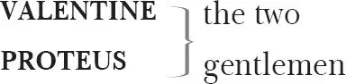

SPEED , a clownish servant 1 to Valentine
LANCE , the like 2 to Proteus
DUKE OF MILAN , father to Silvia
SILVIA , beloved of Valentine
EGLAMOUR , agent for Silvia in her escape
ANTONIO , father to Proteus
PANTINO , servant to Antonio
TURIO , a foolish rival to Valentine
JULIA , beloved of Proteus
LUCETTA , waiting-woman to Julia
HOST , where Julia lodges
OUTLAWS , with Valentine
Servants, Musicians, Lance's dog Crab
Act 1
Scene 1 ／ running scene 1 3
Enter Valentine 4 [and ] Proteus 5
VALENTINE Cease to persuade, my loving Proteus:
Home-keeping youth have ever homely 6 wits.
Were't not affection 7 chains thy tender 8 days
To the sweet glances of thy honoured love,
I rather would entreat thy company
To see the wonders of the world abroad,
Than — living dully sluggardized 9 at home —
Wear out thy youth with shapeless 10 idleness.
But since thou lov'st, love still 11 , and thrive therein,
Even as I would, when I to love begin.
PROTEUS Wilt thou be gone? Sweet Valentine, adieu.
Think on thy Proteus, when thou haply 12 see'st
Some rare noteworthy object in thy travel.
Wish me partaker in thy happiness
When thou dost meet good hap 13 : and in thy danger —
If ever danger do environ 14 thee —
Commend thy grievance 15 to my holy prayers,
For I will be thy beadsman 16 , Valentine.
VALENTINE And on a love-book 17 pray for my success?
PROTEUS Upon some book I love, I'll pray for thee.
VALENTINE That's on some shallow story of deep love:
How young Leander crossed the Hellespont 18 .
PROTEUS That's a deep story, of a deeper love,
For he was more than over-shoes in love 19 .
VALENTINE 'Tis true: for you are over-boots in love,
And yet you never swam the Hellespont.
PROTEUS Over the boots? Nay, give me not the boots 20 .
VALENTINE No, I will not, for it boots 21 thee not.
PROTEUS What?
VALENTINE To be in love, where scorn is bought with groans:
Coy 22 looks with heart-sore sighs, one fading moment's mirth,
With twenty watchful 23 , weary, tedious nights;
If haply won, perhaps a hapless 24 gain,
If lost, why then a grievous labour won 25 ;
However 26 , but 27 a folly 28 bought with wit,
Or else a wit by folly vanquishèd.
PROTEUS So, by your circumstance 29 , you call me fool.
VALENTINE So, by your circumstance 30 , I fear you'll prove.
PROTEUS 'Tis Love you cavil 31 at: I am not Love 32 .
VALENTINE Love is your master, for he masters you:
And he that is so yokèd 33 by a fool,
Methinks should not be chronicled for 34 wise.
PROTEUS Yet writers say: as in the sweetest bud
The eating canker 35 dwells, so eating love
Inhabits in the finest wits of all.
VALENTINE And writers say: as the most forward 36 bud
Is eaten by the canker ere it blow 37 ,
Even so by love, the young and tender wit
Is turned to folly, blasting 38 in the bud,
Losing his verdure 39 , even in the prime 40 ,
And all the fair effects 41 of future hopes.
But wherefore 42 waste I time to counsel 43 thee
That art a votary 44 to fond 45 desire?
Once more, adieu. My father at the road 46
Expects my coming, there to see me shipped 47 .
PROTEUS And thither will I bring thee, Valentine.
VALENTINE Sweet Proteus, no: now let us take our leave.
To Milan 48 let me hear from thee by letters
Of thy success 49 in love, and what news else
Betideth 50 here in absence of thy friend:
And I likewise will visit thee with mine 51 .
PROTEUS All happiness bechance 52 to thee in Milan.
VALENTINE As much to you at home: and so, farewell.
Exit
PROTEUS He after honour hunts, I after love;
He leaves his friends to dignify 53 them more;
I leave 54 myself, my friends and all, for love.
Thou, Julia 55 , thou hast metamorphosed me:
Made me neglect my studies, lose my time,
War 56 with good counsel, set the world at nought;
Made wit with musing 57 weak, heart sick with thought.
[Enter Speed 58 ]
SPEED Sir Proteus, 'save you 59 . Saw you my master?
PROTEUS But 60 now he parted hence to embark for Milan.
SPEED Twenty to one then, he is shipped already,
And I have played the sheep 61 in losing him.
PROTEUS Indeed, a sheep doth very often stray,
An if 62 the shepherd be awhile away.
SPEED You conclude that my master is a shepherd, then, and I a sheep?
PROTEUS I do.
SPEED Why then, my horns are his horns 63 , whether I wake or sleep.
PROTEUS A silly answer, and fitting well a sheep.
SPEED This proves me still a sheep.
PROTEUS True: and thy master a shepherd.
SPEED Nay, that I can deny by a circumstance 64 .
PROTEUS It shall go hard but I'll prove it by another 65 .
SPEED The shepherd seeks the sheep, and not the sheep the shepherd; but I seek my master, and my master seeks not me. Therefore I am no sheep.
PROTEUS The sheep for fodder 66 follow the shepherd, the shepherd for food follows not the sheep: thou for wages followest thy master, thy master for wages follows not thee. Therefore thou art a sheep.
SPEED Such another proof will make me cry 'baa 67 '.
PROTEUS But dost thou hear? Gav'st thou my letter to Julia?
SPEED Ay, sir: I, a lost-mutton 68 , gave your letter to her, a laced-mutton 69 , and she, a laced-mutton, gave me, a lost-mutton, nothing for my labour.
PROTEUS Here's too small a pasture for such store 70 of muttons.
SPEED If the ground be overcharged 71 , you were best stick 72 her.
PROTEUS Nay, in that you are astray 73 : 'twere best pound 74 you.
SPEED Nay, sir, less than a pound 75 shall serve me for carrying your letter.
PROTEUS You mistake: I mean the pound — a pinfold 76 .
SPEED From a pound to a pin 77 ? Fold 78 it over and over, 'tis threefold too little for carrying a letter to your lover.
PROTEUS But what said she?
SPEED Ay.
Nods his head
PROTEUS Nod — ay — why, that's 'noddy' 79 .
SPEED You mistook, sir: I say she did nod, and you ask me if she did nod, and I say 'ay'.
PROTEUS And that set together is noddy.
SPEED Now you have taken the pains to set it together, take it for your pains 80 .
PROTEUS No, no, you shall have it for bearing the letter.
SPEED Well, I perceive I must be fain to bear 81 with you.
PROTEUS Why sir, how do you bear with me?
SPEED Marry 82 , sir, the letter, very orderly 83 , having nothing but the word 'noddy' for my pains.
PROTEUS Beshrew 84 me, but you have a quick wit.
SPEED And yet it cannot overtake your slow purse.
PROTEUS Come come, open the matter 85 in brief: what said she?
SPEED Open your purse, that the money and the matter may be both at once delivered.
PROTEUS Well, sir: here is for your pains. What said she?
Gives a coin
SPEED Truly, sir, I think you'll hardly 86 win her.
Examines coin, with contempt
PROTEUS Why? Couldst thou perceive 87 so much from her?
SPEED Sir, I could perceive 88 nothing at all from her; no, not so much as a ducat 89 for delivering your letter. And being so hard to me that brought your mind 90 , I fear she'll prove as hard to you in telling your mind 91 . Give her no token 92 but stones 93 , for she's as hard as steel.
PROTEUS What said she, nothing?
SPEED No, not so much as 'Take this for thy pains.' To testify your bounty 94 , I thank you, you have testerned me 95 ; in requital whereof 96 , henceforth carry your letters yourself. And so, sir, I'll commend 97 you to my master.
PROTEUS Go, go, be gone, to save your ship from wreck,
[Exit Speed ]
Which cannot perish having thee aboard,
Being destined to a drier death 98 on shore.
I must go send some better messenger:
I fear my Julia would not deign my lines 99 ,
Receiving them from such a worthless post 100 .
Exit
Scene 2 ／ running scene 2
Enter Julia and Lucetta 101
JULIA But say, Lucetta — now we are alone —
Wouldst thou then counsel me to fall in love?
LUCETTA Ay, madam, so 102 you stumble 103 not unheedfully 104 .
JULIA Of all the fair resort 105 of gentlemen
That every day with parle 106 encounter me,
In thy opinion, which is worthiest love?
LUCETTA Please you repeat their names, I'll show my mind,
According to my shallow simple skill.
JULIA What think'st thou of the fair Sir Eglamour 107 ?
LUCETTA As of a knight well-spoken, neat 108 and fine;
But, were I you, he never should be mine.
JULIA What think'st thou of the rich Mercatio 109 ?
LUCETTA Well of his wealth; but of himself, so so.
JULIA What think'st thou of the gentle 110 Proteus?
LUCETTA Lord, Lord: to see what folly reigns in us!
JULIA How now? What means this passion 111 at his name?
LUCETTA Pardon, dear madam: 'tis a passing 112 shame
That I — unworthy body as I am —
Should censure 113 thus on lovely gentlemen.
JULIA Why not on Proteus, as of all the rest?
LUCETTA Then thus: of many good, I think him best.
JULIA Your reason?
LUCETTA I have no other, but a woman's reason:
I think him so because I think him so.
JULIA And wouldst thou have me cast 114 my love on him?
LUCETTA Ay, if you thought your love not cast away 115 .
JULIA Why he, of all the rest, hath never moved 116 me.
LUCETTA Yet he, of all the rest, I think best loves ye.
JULIA His little speaking 117 shows his love but small.
LUCETTA Fire that's closest kept burns most of all.
JULIA They do not love that do not show their love.
LUCETTA O, they love least that let men know their love.
JULIA I would I knew his mind.
LUCETTA Peruse this paper, madam.
Gives a letter
JULIA 'To Julia'. Say, from whom?
LUCETTA That the contents will show.
JULIA Say, say: who gave it thee?
LUCETTA Sir Valentine's page: and sent, I think, from Proteus.
He would have given it you, but I, being in the way,
Did in your name receive it 118 : pardon the fault, I pray.
JULIA Now, by my modesty, a goodly broker 119 !
Dare you presume to harbour wanton 120 lines?
To whisper and conspire against my youth?
Now trust me, 'tis an office 121 of great worth,
And you an officer fit for the place.
There, take the paper: see it be returned,
Or else return no more into my sight.
LUCETTA To plead for love deserves more fee 122 than hate.
JULIA Will ye be gone?
LUCETTA That you may ruminate 123 .
Exit
JULIA And yet I would I had o'erlooked 124 the letter;
It were a shame to call her back again
And pray her to 125 a fault for which I chid 126 her.
What fool is she, that knows I am a maid,
And would not force the letter to my view!
Since maids, in modesty, say 'no' to that
Which they would have the profferer construe 'ay' 127 .
Fie, fie: how wayward 128 is this foolish love
That — like a testy 129 babe — will scratch the nurse
And presently 130 , all humbled, kiss the rod 131 !
How churlishly 132 I chid Lucetta hence,
When willingly I would have had her here!
How angerly 133 I taught my brow to frown,
When inward joy enforced my heart to smile!
My penance is to call Lucetta back
And ask remission 134 for my folly past.
What ho! Lucetta!
[Enter Lucetta ]
LUCETTA What would your ladyship?
JULIA Is't near dinner-time?
LUCETTA I would it were,
That you might kill your stomach 135 on your meat
And not upon your maid.
Drops a letter, then picks it up
JULIA What is't that you took up so gingerly?
LUCETTA Nothing.
JULIA Why didst thou stoop then?
LUCETTA To take a paper up that I let fall.
JULIA And is that paper nothing?
LUCETTA Nothing concerning me.
JULIA Then let it lie for those that it concerns 136 .
LUCETTA Madam, it will not lie where it concerns 137 ,
Unless it have a false interpreter 138 .
JULIA Some love of yours hath writ to you in rhyme.
LUCETTA That 139 I might sing it, madam, to a tune.
Give me a note: your ladyship can set 140 —
JULIA As little by such toys 141 as may be possible.
Best sing it to the tune of 'Light o'love' 142 .
LUCETTA It is too heavy 143 for so light 144 a tune.
JULIA Heavy? Belike it hath some burden 145 then?
LUCETTA Ay, and melodious were it, would you sing it.
JULIA And why not you?
LUCETTA I cannot reach so high 146 .
JULIA Let's see your song.
Takes the letter
How now, minion 147 !
LUCETTA Keep tune 148 there still, so you will sing it out 149 :
And yet methinks I do not like this tune.
JULIA You do not?
LUCETTA No, madam, 'tis too sharp 150 .
JULIA You, minion, are too saucy.
LUCETTA Nay, now you are too flat 151 ,
And mar 152 the concord 153 with too harsh a descant 154 :
There wanteth but a mean 155 to fill your song.
JULIA The mean is drowned with your unruly bass 156 .
LUCETTA Indeed, I bid the base 157 for Proteus.
JULIA This babble shall not henceforth trouble me.
Here is a coil with protestation 158 !
Tears the letter
Go, get you gone, and let the papers lie:
You would be fing'ring 159 them to anger me.
LUCETTA She makes it strange 160 , but she would be best pleased
To be so angered with another letter.
[Exit ]
JULIA Nay, would I were so angered with the same 161 :
O hateful hands, to tear such loving words;
Injurious wasps 162 , to feed on such sweet honey
And kill the bees that yield it with your stings!
I'll kiss each several paper 163 for amends.
Look, here is writ 'kind Julia'. Unkind 164 Julia,
↓Examining the pieces↓
As 165 in revenge of thy ingratitude,
I throw thy name against the bruising stones,
Trampling contemptuously on thy disdain.
And here is writ 'love-wounded Proteus'.
Poor wounded name: my bosom as a bed
Shall lodge thee 166 till thy wound be throughly 167 healed;
And thus I search 168 it with a sovereign 169 kiss.
But twice or thrice was 'Proteus' written down.
Be calm, good wind, blow not a word away
Till I have found each letter, in the letter,
Except mine own name: that, some whirlwind bear
Unto a ragged 170 , fearful, hanging rock,
And throw it thence into the raging sea.
Lo, here in one line is his name twice writ:
'Poor forlorn Proteus, passionate Proteus,
To the sweet Julia': that 171 I'll tear away:
And yet I will not, sith 172 so prettily
He couples it to his complaining names 173 .
Thus will I fold them, one upon another 174 ;
Now kiss, embrace, contend 175 , do what you will.
[Enter Lucetta ]
LUCETTA Madam, dinner is ready, and your father stays 176 .
JULIA Well, let us go.
LUCETTA What, shall these papers lie like tell-tales here?
JULIA If you respect 177 them, best to take them up.
LUCETTA Nay, I was taken up 178 for 179 laying them down.
Yet here they shall not lie, for catching cold.
Picks up the pieces
JULIA I see you have a month's mind to 180 them.
LUCETTA Ay, madam, you may say what sights you see;
I see things too, although you judge I wink 181 .
JULIA Come, come: will't please you go?
Exeunt
Scene 3 ／ running scene 3
Enter Antonio and Pantino 182
ANTONIO Tell me, Pantino, what sad 183 talk was that
Wherewith my brother held you in the cloister 184 ?
PANTINO 'Twas of his nephew Proteus, your son.
ANTONIO Why? What of him?
PANTINO He wondered that your lordship
Would suffer 185 him to spend his youth at home,
While other men, of slender reputation 186 ,
Put forth 187 their sons to seek preferment 188 out:
Some to the wars to try their fortune there,
Some to discover islands far away,
Some to the studious universities;
For any or for all these exercises,
He said that Proteus your son was meet 189 ,
And did request me to importune 190 you
To let him spend his time no more at home,
Which would be great impeachment to his age 191 ,
In having known no travel in his youth.
ANTONIO Nor need'st thou much importune me to that
Whereon this month I have been hammering 192 .
I have considered well his loss of time,
And how he cannot be a perfect 193 man,
Not being tried 194 and tutored in the world:
Experience is by industry achieved
And perfected by the swift course of time.
Then tell me, whither were I best to send him?
PANTINO I think your lordship is not ignorant 195
How his companion, youthful Valentine,
Attends the emperor 196 in his royal court.
ANTONIO I know it well.
PANTINO 'Twere good, I think, your lordship sent him thither:
There shall he practise tilts 197 and tournaments,
Hear sweet discourse 198 , converse with noblemen,
And be in eye of 199 every exercise
Worthy his youth and nobleness of birth.
ANTONIO I like thy counsel: well hast thou advised.
And that thou mayst perceive how well I like it,
The execution 200 of it shall make known.
Even with the speediest expedition 201
I will dispatch him to the emperor's court.
PANTINO Tomorrow, may it please you, Don Alfonso
With other gentlemen of good esteem
Are journeying to salute the emperor
And to commend 202 their service to his will.
ANTONIO Good company: with them shall Proteus go.
[Enter Proteus, reading ]
And in good time 203 ! Now will we break with 204 him.
PROTEUS Sweet love, sweet lines, sweet life!
Here is her hand 205 , the agent of her heart;
Here is her oath for love, her honour's pawn 206 .
O, that our fathers would applaud our loves
To seal 207 our happiness with their consents.
O heavenly Julia!
ANTONIO How now? What letter are you reading there?
PROTEUS May't please your lordship, 'tis a word or two
Of commendations 208 sent from Valentine,
Delivered by a friend that came from him.
ANTONIO Lend me the letter: let me see what news.
PROTEUS There is no news, my lord, but that he writes
How happily he lives, how well beloved
And daily gracèd 209 by the emperor,
Wishing me with him, partner of his fortune.
ANTONIO And how stand you affected 210 to his 211 wish?
PROTEUS As one relying on your lordship's will,
And not depending on his friendly wish.
ANTONIO My will is something sorted 212 with his wish.
Muse 213 not that I thus suddenly proceed:
For what I will, I will, and there an end.
I am resolved that thou shalt spend some time
With Valentinus in the emperor's court:
What maintenance 214 he from his friends 215 receives,
Like exhibition 216 thou shalt have from me.
Tomorrow be in readiness to go:
Excuse it not 217 , for I am peremptory 218 .
PROTEUS My lord, I cannot be so soon provided 219 :
Please you deliberate a day or two.
ANTONIO Look 220 what thou want'st shall be sent after thee.
No more of stay 221 : tomorrow thou must go.
Come on, Pantino, you shall be employed
To hasten on his expedition.
[Exeunt Antonio and Pantino ]
PROTEUS Thus have I shunned the fire for fear of burning,
And drenched me in the sea where I am drowned.
I feared to show my father Julia's letter,
Lest he should take exceptions 222 to my love,
And with the vantage 223 of mine own excuse
Hath he excepted most against 224 my love.
O, how this spring of love resembleth
The uncertain glory of an April day,
Which now shows all the beauty of the sun,
And by and by a cloud takes all away.
[Enter Pantino ]
PANTINO Sir Proteus, your father calls for you:
He is in haste, therefore I pray you go.
PROTEUS Why, this it is: my heart accords 225 thereto,
And yet a thousand times it answers 'no'.
Exeunt
Act 2
Scene 1 ／ running scene 4 226
Enter Valentine [and ] Speed
SPEED Sir, your glove.
VALENTINE Not mine: my gloves are on 227 .
SPEED Why then, this may be yours, for this is but one.
VALENTINE Ha! Let me see: ay, give it me, it's mine.
Sweet ornament 228 that decks 229 a thing divine.
Ah, Silvia 230 , Silvia!
SPEED Madam Silvia! Madam Silvia!
Calls
VALENTINE How now, sirrah 231 ?
SPEED She is not within hearing, sir.
VALENTINE Why, sir, who bade you call her?
SPEED Your worship, sir, or else I mistook.
VALENTINE Well, you'll still 232 be too forward 233 .
SPEED And yet I was last chidden for being too slow.
VALENTINE Go to 234 , sir: tell me, do you know Madam Silvia?
SPEED She that your worship loves?
VALENTINE Why, how know you that I am in love?
SPEED Marry, by these special marks 235 : first, you have learned—like Sir Proteus—to wreathe 236 your arms like a malcontent 237 : to relish 238 a love-song like a robin-redbreast: to walk alone like one that had the pestilence 239 : to sigh like a school-boy that had lost his A B C 240 : to weep like a young wench that had buried her grandam 241 : to fast like one that takes diet: to watch 242 like one that fears robbing: to speak puling 243 like a beggar at Hallowmas 244 . You were wont 245 , when you laughed, to crow like a cock; when you walked, to walk like one of the lions: when you fasted, it was presently 246 after dinner: when you looked sadly, it was for want 247 of money. And now you are metamorphosed with a mistress, that, when I look on you, I can hardly think you my master.
VALENTINE Are all these things perceived in me?
SPEED They are all perceived without ye 248 .
VALENTINE Without me 249 ? They cannot.
SPEED Without you 250 ? Nay, that's certain: for, without 251 you were so simple, none else would. But you are so without these follies, that these follies are within you, and shine through you like the water in an urinal 252 , that not an eye that sees you but is a physician to comment on your malady 253 .
VALENTINE But tell me, dost thou know my lady Silvia?
SPEED She that you gaze on so, as she sits at supper?
VALENTINE Hast thou observed that? Even she 254 , I mean.
SPEED Why sir, I know her not.
VALENTINE Dost thou know her by my gazing on her, and yet know'st her not?
SPEED Is she not hard-favoured 255 , sir?
VALENTINE Not so fair, boy, as well-favoured 256 of you, well-favoured 257 .
SPEED Sir, I know that well enough.
VALENTINE What dost thou know?
SPEED That she is not so fair as, of you, well-favoured.
VALENTINE I mean that her beauty is exquisite, but her favour 258 infinite.
SPEED That's because the one is painted 259 and the other out of all count 260 .
VALENTINE How painted? And how out of count?
SPEED Marry, sir, so painted to make her fair, that no man counts of 261 her beauty.
VALENTINE How esteem'st thou me? 262 I account of her beauty.
SPEED You never saw her since she was deformed 263 .
VALENTINE How long hath she been deformed?
SPEED Ever since you loved her.
VALENTINE I have loved her ever since I saw her, and still I see her beautiful.
SPEED If you love her, you cannot see her.
VALENTINE Why?
SPEED Because Love is blind 264 . O, that you had mine eyes, or your own eyes had the lights 265 they were wont to have when you chid at Sir Proteus for going ungartered 266 !
VALENTINE What should I see then?
SPEED Your own present folly and her passing deformity: for he, being in love, could not see to garter his hose 267 ; and you, being in love, cannot see to put on your hose.
VALENTINE Belike, boy, then you are in love, for last morning you could not see to wipe my shoes.
SPEED True, sir: I was in love with my bed. I thank you, you swinged 268 me for my love, which makes me the bolder to chide you for yours.
VALENTINE In conclusion, I stand affected to 269 her.
SPEED I would you were set 270 , so your affection would cease.
VALENTINE Last night she enjoined me to write some lines to one she loves.
SPEED And have you?
VALENTINE I have.
SPEED Are they not lamely writ?
VALENTINE No, boy, but as well as I can do them. Peace! Here she comes.
SPEED O, excellent motion 271 ! O, exceeding puppet! Now will he interpret to her 272 .
Aside
[Enter Silvia ]
VALENTINE Madam and mistress, a thousand good-morrows.
SPEED O, 'give ye good ev'n 273 : here's a million of 274 manners.
Aside
SILVIA Sir Valentine and servant 275 , to you two thousand.
SPEED He should give her interest, and she gives it him 276 .
Aside
VALENTINE As you enjoined me, I have writ your letter
Unto the secret, nameless friend 277 of yours,
Which I was much unwilling to proceed in
But for my duty to your ladyship.
Gives her a letter
SILVIA I thank you, gentle servant: 'tis very clerkly 278 done.
VALENTINE Now trust me, madam, it came hardly off 279 :
For being ignorant to whom it goes
I writ at random, very doubtfully 280 .
SILVIA Perchance you think too much of so much pains 281 ?
VALENTINE No, madam, so it stead you 282 , I will write —
Please you command — a thousand times as much.
And yet—
SILVIA A pretty period 283 ! Well, I guess the sequel 284 ,
And yet I will not name it: and yet I care not.
And yet take this 285 again. And yet I thank you,
Offers him the letter
Meaning henceforth to trouble you no more.
SPEED And yet you will, and yet another 'yet'.
Aside
VALENTINE What means your ladyship? Do you not like it?
SILVIA Yes, yes: the lines are very quaintly 286 writ,
But, since unwillingly, take them again 287 .
Offers the letter again
Nay, take them.
VALENTINE Madam, they are for you.
SILVIA Ay, ay: you writ them, sir, at my request,
But I will none of 288 them. They are for you:
I would have had them writ more movingly.
VALENTINE Please you, I'll write your ladyship another.
SILVIA And when it's writ, for my sake read it over,
And if it please you, so 289 : if not, why, so.
VALENTINE If it please me, madam? What then?
SILVIA Why, if it please you, take it for your labour 290 ;
And so, good morrow, servant.
Exit
SPEED O, jest unseen, inscrutable, invisible
Aside
As a nose on a man's face, or a weathercock on a steeple!
My master sues to 291 her, and she hath taught her suitor,
He being her pupil, to become her tutor.
O, excellent device 292 ! Was there ever heard a better?
That my master, being scribe,
To himself should write the letter?
VALENTINE How now, sir? What, are you reasoning 293 with yourself?
SPEED Nay, I was rhyming: 'tis you that have the reason.
VALENTINE To do what?
SPEED To be a spokesman from Madam Silvia.
VALENTINE To whom?
SPEED To yourself: why, she woos you by a figure 294 .
VALENTINE What figure?
SPEED By a letter, I should say.
VALENTINE Why, she hath not writ to me?
SPEED What need she, when she hath made you write to yourself? Why, do you not perceive the jest?
VALENTINE No, believe me.
SPEED No believing you indeed, sir. But did you perceive her earnest 295 ?
VALENTINE She gave me none 296 , except an angry word.
SPEED Why, she hath given you a letter.
VALENTINE That's the letter I writ to her friend.
SPEED And that letter hath she delivered, and there an end 297 .
VALENTINE I would it were no worse.
SPEED I'll warrant 298 you, 'tis as well:
For often have you writ to her, and she in modesty,
Or else for want 299 of idle time, could not again reply,
Or fearing else some messenger that might her mind discover 300 ,
Herself hath taught her love himself to write unto her lover.
All this I speak in print 301 , for in print I found it.
Why muse you, sir? 'Tis dinner-time.
VALENTINE I have dined 302 .
SPEED Ay, but hearken, sir: though the chameleon Love can feed on the air 303 , I am one that am nourished by my victuals 304 , and would fain 305 have meat. O, be not like your mistress: be moved 306 , be moved.
Exeunt
Scene 2 ／ running scene 5 307
Enter Proteus [and ] Julia
PROTEUS Have patience, gentle Julia.
JULIA I must, where is 308 no remedy.
PROTEUS When possibly I can, I will return.
JULIA If you turn 309 not, you will return the sooner.
Keep this remembrance 310 for thy Julia's sake.
Gives a ring
PROTEUS Why then, we'll make exchange; here, take you this.
Gives a ring
JULIA And seal the bargain with a holy kiss.
They kiss
PROTEUS Here is my hand for my true constancy 311 :
And when that hour o'erslips 312 me in the day,
Wherein I sigh not, Julia, for thy sake,
The next ensuing hour some foul mischance 313
Torment me for my love's forgetfulness.
My father stays 314 my coming: answer not,
The tide is now; nay, not thy tide of tears,
That tide will stay 315 me longer than I should.
Julia, farewell. What, gone without a word?
[Exit Julia ]
Ay, so true love should do: it cannot speak,
For truth hath better deeds than words to grace 316 it.
[Enter Pantino ]
PANTINO Sir Proteus, you are stayed for.
PROTEUS Go: I come, I come.
Alas, this parting strikes poor lovers dumb.
Exeunt
Scene 3 ／ running scene 6
Enter Lance 317 [leading his dog, Crab ]
LANCE Nay, 'twill be this hour ere 318 I have done weeping: all the kind 319 of the Lances have this very fault. I have received my proportion 320 , like the prodigious 321 son, and am going with Sir Proteus to the Imperial's 322 court. I think Crab 323 , my dog, be the sourest-natured dog that lives: my mother weeping, my father wailing, my sister crying, our maid howling, our cat wringing her hands, and all our house in a great perplexity, yet did not this cruel-hearted cur 324 shed one tear: he is a stone, a very pebble stone, and has no more pity in him than a dog. A Jew 325 would have wept to have seen our parting. Why, my grandam, having no eyes, look you, wept herself blind at my parting. Nay, I'll show you the manner of it 326 . This shoe 327 is my father. No, this left 328 shoe is my father. No, no, this left shoe is my mother. Nay, that cannot be so neither. Yes, it is so, it is so: it hath the worser sole 329 . This shoe with the hole 330 in it is my mother, and this my father. A vengeance on't 331 , there 'tis. Now, sir, this staff 332 is my sister, for, look you, she is as white as a lily and as small 333 as a wand 334 . This hat is Nan, our maid. I am the dog: no, the dog is himself, and I am the dog. O, the dog is me, and I am myself. Ay, so, so. Now come I to my father. Father, your 335 blessing: now should not the shoe speak a word for weeping. Now should I kiss my father: well, he weeps on. Now come I to my mother: O, that she could speak now like a wood 336 woman! Well, I kiss her. Why, there 'tis; here's my mother's breath 337 up and down 338 . Now come I to my sister; mark 339 the moan she makes. Now the dog all this while sheds not a tear nor speaks a word: but see how I lay the dust 340 with my tears.
[Enter Pantino ]
PANTINO Lance, away, away: aboard! Thy master is shipped, and thou art to post 341 after with oars. What's the matter? Why weep'st thou, man? Away, ass, you'll lose 342 the tide, if you tarry any longer.
LANCE It is no matter if the tied 343 were lost, for it is the unkindest tied that ever any man tied.
PANTINO What's the unkindest tide?
LANCE Why, he that's tied here, Crab, my dog.
PANTINO Tut, man, I mean thou'lt lose the flood 344 , and in losing the flood, lose 345 thy voyage, and in losing thy voyage, lose thy master, and in losing thy master, lose thy service, and in losing thy service— Why dost thou stop my mouth?
Lance gestures
for him to stop
LANCE For fear thou shouldst lose thy tongue.
PANTINO Where should I lose my tongue?
LANCE In thy tale 346 .
PANTINO In thy tail 347 !
LANCE Lose the tide, and the voyage, and the master, and the service, and the tied! Why, man, if the river were dry, I am able to fill it with my tears: if the wind were down, I could drive the boat with my sighs.
PANTINO Come: come away, man. I was sent to call 348 thee.
LANCE Sir, call me what thou dar'st.
PANTINO Wilt thou go?
LANCE Well, I will go.
Exeunt
Scene 4 ／ running scene 7 349
Enter Valentine, Silvia, Turio 350 [and ] Speed
SILVIA Servant!
VALENTINE Mistress?
SPEED Master, Sir Turio frowns on you.
VALENTINE Ay, boy, it's for love.
SPEED Not of you.
VALENTINE Of my mistress, then.
SPEED 'Twere good you knocked 351 him.
[Exit ]
SILVIA Servant, you are sad.
VALENTINE Indeed, madam, I seem so.
TURIO Seem you that 352 you are not?
VALENTINE Haply I do.
TURIO So do counterfeits 353 .
VALENTINE So do you.
TURIO What seem I that I am not?
VALENTINE Wise.
TURIO What instance 354 of the contrary?
VALENTINE Your folly.
TURIO And how quote 355 you my folly?
VALENTINE I quote it in your jerkin 356 .
TURIO My jerkin is a doublet 357 .
VALENTINE Well, then, I'll double your folly.
TURIO How? 358
SILVIA What, angry, Sir Turio? Do you change colour?
VALENTINE Give him leave, madam, he is a kind of chameleon.
TURIO That hath more mind to feed on your blood than live in your air 359 .
VALENTINE You have said, sir.
TURIO Ay, sir, and done 360 too, for this time 361 .
VALENTINE I know it well, sir: you always end ere you begin 362 .
SILVIA A fine volley 363 of words, gentlemen, and quickly shot off.
VALENTINE 'Tis indeed, madam, we thank the giver.
SILVIA Who is that, servant?
VALENTINE Yourself, sweet lady, for you gave the fire 364 . Sir Turio borrows his wit from your ladyship's looks, and spends what he borrows kindly 365 in your company.
TURIO Sir, if you spend 366 word for word with me, I shall make your wit bankrupt.
VALENTINE I know it well, sir: you have an exchequer 367 of words and, I think, no other treasure to give your followers, for it appears by their bare liveries 368 that they live by your bare words.
SILVIA No more, gentlemen, no more: here comes my father.
[Enter Duke ]
DUKE Now, daughter Silvia, you are hard beset 369 .
Sir Valentine, your father is in good health:
What say you to a letter from your friends
Of much good news?
VALENTINE My lord, I will be thankful
To any happy messenger 370 from thence.
DUKE Know ye Don Antonio, your countryman 371 ?
VALENTINE Ay, my good lord, I know the gentleman
To be of worth 372 and worthy estimation 373 ,
And not without desert 374 so well reputed.
DUKE Hath he not a son?
VALENTINE Ay, my good lord, a son that well deserves
The honour and regard of such a father.
DUKE You know him well?
VALENTINE I knew him as myself, for from our infancy
We have conversed and spent our hours together,
And though myself have been an idle truant,
Omitting 375 the sweet benefit of time
To clothe mine age 376 with angel-like perfection,
Yet hath Sir Proteus — for that's his name —
Made use and fair advantage of his days:
His years but young, but his experience old,
His head unmellowed 377 but his judgement ripe 378 ,
And in a word — for far behind his worth
Comes all the praises that I now bestow —
He is complete 379 in feature 380 and in mind,
With all good grace to grace a gentleman.
DUKE Beshrew me, sir, but if he make this good 381 ,
He is as worthy for an empress' love,
As meet to be an emperor's counsellor.
Well, sir, this gentleman is come to me,
With commendation from great potentates 382 ,
And here he means to spend his time awhile:
I think 'tis no unwelcome news to you.
VALENTINE Should I have wished a thing, it had been he.
DUKE Welcome him then according to his worth.
Silvia, I speak to you, and you, Sir Turio,
For Valentine, I need not cite 383 him to it:
I will send him hither to you presently.
[Exit ]
VALENTINE This is the gentleman I told your ladyship
Had come 384 along with me, but that his mistress
Did hold his eyes locked in her crystal looks 385 .
SILVIA Belike that 386 now she hath enfranchised them
Upon some other pawn for fealty 387 .
VALENTINE Nay, sure, I think she holds them prisoners still.
SILVIA Nay, then he should be blind, and being blind,
How could he see his way to seek out you?
VALENTINE Why, lady, Love hath twenty pair of eyes.
TURIO They say that Love hath not an eye at all 388 .
VALENTINE To see such lovers, Turio, as yourself:
Upon a homely 389 object, Love can wink 390 .
SILVIA Have done, have done: here comes the gentleman.
[Turio may exit ]
[Enter Proteus ]
VALENTINE Welcome, dear Proteus! Mistress, I beseech you,
Confirm his welcome with some special favour.
SILVIA His worth is warrant 391 for his welcome hither,
If this be he you oft have wished to hear from.
VALENTINE Mistress, it is: sweet lady, entertain 392 him
To be my fellow-servant to your ladyship.
SILVIA Too low 393 a mistress for so high 394 a servant.
PROTEUS Not so, sweet lady: but too mean 395 a servant
To have a look of such a worthy mistress.
VALENTINE Leave off discourse of disability 396 :
Sweet lady, entertain him for your servant.
PROTEUS My duty 397 will I boast of, nothing else.
SILVIA And duty never yet did want his meed 398 .
Servant, you are welcome to a worthless mistress.
PROTEUS I'll die 399 on him that says so but 400 yourself.
SILVIA That you are welcome?
PROTEUS That you are worthless.
[Enter Turio, or a servant enters and whispers to Turio ]
TURIO Madam, my lord your father would speak with you.
SILVIA I wait upon his pleasure. Come, Sir Turio,
Go with me. Once more, new servant, welcome.
I'll leave you to confer of home affairs:
When you have done, we look to hear from you.
PROTEUS We'll both attend upon your ladyship.
[Exeunt Silvia and Turio ]
VALENTINE Now, tell me: how do all from whence you came?
PROTEUS Your friends are well and have them much commended 401 .
VALENTINE And how do yours?
PROTEUS I left them all in health.
VALENTINE How does your lady? And how thrives your love?
PROTEUS My tales of love were wont to 402 weary you:
I know you joy not in a love discourse.
VALENTINE Ay, Proteus, but that life is altered now.
I have done penance for contemning 403 Love,
Whose high imperious 404 thoughts have punished me
With bitter fasts, with penitential 405 groans,
With nightly tears and daily heart-sore sighs:
For in revenge of my contempt of love,
Love hath chased sleep from my enthrallèd 406 eyes,
And made them watchers of 407 mine own heart's sorrow.
O gentle Proteus, Love's a mighty lord,
And hath so humbled me, as I confess,
There is no woe to his correction 408 ,
Nor to 409 his service no such joy on earth.
Now no discourse, except it be of love:
Now can I break my fast, dine, sup and sleep
Upon the very naked 410 name of love.
PROTEUS Enough: I read your fortune in your eye.
Was this 411 the idol that you worship so?
VALENTINE Even she 412 ; and is she not a heavenly saint?
PROTEUS No, but she is an earthly paragon 413 .
VALENTINE Call her divine.
PROTEUS I will not flatter her.
VALENTINE O, flatter me, for love delights in praises.
PROTEUS When I was sick 414 , you gave me bitter pills 415 ,
And I must minister the like 416 to you.
VALENTINE Then speak the truth by 417 her; if not divine,
Yet let her be a principality 418 ,
Sovereign to all the creatures on the earth.
PROTEUS Except my mistress.
VALENTINE Sweet 419 , except not any,
Except 420 thou wilt except against 421 my love.
PROTEUS Have I not reason to prefer 422 mine own?
VALENTINE And I will help thee to prefer her too:
She shall be dignified with this high honour,
To bear my lady's train, lest the base earth
Should from her vesture chance to steal a kiss 423 ,
And of so great a favour growing proud,
Disdain to root the summer-swelling flower 424
And make rough winter everlastingly.
PROTEUS Why, Valentine, what braggardism 425 is this?
VALENTINE Pardon me, Proteus: all I can 426 is nothing
To 427 her whose worth makes other worthies 428 nothing.
She is alone 429 .
PROTEUS Then let her alone.
VALENTINE Not for the world: why, man, she is mine own,
And I as rich in having such a jewel
As twenty seas, if all their sand were pearl,
The water nectar, and the rocks pure gold.
Forgive me that I do not dream on thee 430 ,
Because thou see'st me dote upon 431 my love.
My foolish rival, that her father likes —
Only for 432 his possessions are so huge —
Is gone with her along, and I must after:
For love, thou know'st, is full of jealousy.
PROTEUS But she loves you?
VALENTINE Ay, and we are betrothed: nay, more, our marriage-hour,
With all the cunning manner of our flight 433 ,
Determined of 434 : how I must climb her window,
The ladder made of cords, and all the means
Plotted and 'greed 435 on for my happiness.
Good Proteus, go with me to my chamber,
In these affairs to aid me with thy counsel.
PROTEUS Go on before: I shall inquire you forth 436 .
I must unto the road, to disembark 437
Some necessaries 438 that I needs must use,
And then I'll presently attend you.
VALENTINE Will you make haste?
PROTEUS I will.
Exit [Valentine ]
Even as one heat another heat expels 439 ,
Or as one nail by strength drives out another,
So the remembrance 440 of my former love
Is by a newer object 441 quite forgotten.
Is it mine eye or Valentine's praise?
Her true perfection or my false transgression 442
That makes me reasonless 443 to reason thus 444 ?
She is fair: and so is Julia that I love —
That I did love, for now my love is thawed,
Which, like a waxen image gainst a fire
Bears no impression of the thing it was.
Methinks my zeal 445 to Valentine is cold,
And that I love him not as I was wont.
O, but I love his lady too too much,
And that's the reason I love him so little.
How shall I dote on her with more advice 446 ,
That thus without advice 447 begin to love her?
'Tis but her picture 448 I have yet beheld,
And that hath dazzlèd my reason's light:
But when I look 449 on her perfections 450 ,
There is no reason but 451 I shall be blind.
If I can check 452 my erring 453 love, I will:
If not, to compass 454 her I'll use my skill.
Exit
Scene 5 ／ running scene 8
Enter Speed and Lance [separately. Lance with his dog, Crab ]
SPEED Lance, by mine honesty, welcome to Padua 455 .
LANCE Forswear 456 not thyself, sweet youth, for I am not welcome. I reckon 457 this always, that a man is never undone 458 till he be hanged, nor never welcome to a place till some certain shot 459 be paid and the hostess 460 say 'Welcome!'
SPEED Come on, you madcap: I'll to the ale-house with you presently, where, for one shot of five pence, thou shalt have five thousand welcomes. But, sirrah, how did thy master part with Madam Julia?
LANCE Marry, after they closed in earnest 461 , they parted very fairly 462 in jest.
SPEED But shall she marry him?
LANCE No.
SPEED How then? Shall he marry her?
LANCE No, neither.
SPEED What, are they broken 463 ?
LANCE No, they are both as whole as a fish 464 .
SPEED Why then, how stands the matter 465 with them?
LANCE Marry, thus: when it stands well with him, it stands well with her.
SPEED What an ass art thou! I understand thee not.
LANCE What a block 466 art thou, that thou canst not! My staff understands 467 me.
SPEED What thou say'st?
LANCE Ay, and what I do too: look thee, I'll but lean, and my staff under-stands me.
SPEED It stands under thee, indeed.
LANCE Why, stand-under and under-stand is all one.
SPEED But tell me true, will't be a match?
LANCE Ask my dog: if he say 'ay', it will. If he say 'no', it will. If he shake his tail and say nothing, it will.
SPEED The conclusion is, then, that it will.
LANCE Thou shalt never get such a secret from me but by a parable 468 .
SPEED 'Tis well that I get it so. But Lance, how say'st thou 469 that my master is become a notable 470 lover?
LANCE I never knew him otherwise.
SPEED Than how?
LANCE A notable lubber 471 , as thou reportest him to be.
SPEED Why, thou whoreson 472 ass, thou mistak'st me 473 .
LANCE Why, fool, I meant not thee, I meant thy master.
SPEED I tell thee, my master is become a hot lover.
LANCE Why, I tell thee, I care not though he burn himself in love. If thou wilt, go with me to the alehouse: if not, thou art an Hebrew, a Jew, and not worth the name of a Christian.
SPEED Why?
LANCE Because thou hast not so much charity in thee as to go to the ale 474 with a Christian. Wilt thou go?
SPEED At thy service.
Exeunt
Scene 6 ／ running scene 9
Enter Proteus alone
PROTEUS To leave my Julia, shall I be forsworn?
To love fair Silvia, shall I be forsworn?
To wrong my friend, I shall be much forsworn.
And ev'n that power which gave me first my oath 475
Provokes me to this threefold perjury.
Love bade me swear, and Love bids me forswear;
O sweet-suggesting 476 Love, if thou hast sinned,
Teach me, thy tempted subject, to excuse it 477 .
At first I did adore a twinkling star,
But now I worship a celestial sun.
Unheedful 478 vows may heedfully 479 be broken,
And he wants wit 480 that wants resolvèd will
To learn 481 his wit t'exchange the bad for better.
Fie, fie, unreverend 482 tongue, to call her 483 bad,
Whose sovereignty so oft thou hast preferred 484
With twenty thousand soul-confirming 485 oaths.
I cannot leave 486 to love, and yet I do:
But there I leave to love where I should love.
Julia I lose, and Valentine I lose:
If I keep them, I needs must lose myself.
If I lose them, thus find I 487 by their loss:
For 488 Valentine, myself, for Julia, Silvia.
I to myself am dearer than a friend,
For love is still most precious in itself,
And Silvia — witness heaven that made her fair 489 —
Shows Julia 490 but a swarthy Ethiope 491 .
I will forget that Julia is alive,
Remembering that my love to her is dead.
And Valentine I'll hold 492 an enemy,
Aiming at Silvia as a sweeter friend.
I cannot now prove constant 493 to myself,
Without some treachery used to Valentine.
This night he meaneth with a corded 494 ladder
To climb celestial Silvia's chamber-window,
Myself in counsel 495 his competitor 496 .
Now presently I'll give her father notice
Of their disguising and pretended flight 497 ,
Who, all enraged, will banish Valentine,
For Turio he intends shall wed his daughter.
But Valentine being gone, I'll quickly cross 498 ,
By some sly trick, blunt 499 Turio's dull proceeding.
Love, lend 500 me wings to make my purpose swift,
As thou hast lent me wit to plot this drift 501 .
Exit
Scene 7 ／ running scene 10 502
Enter Julia and Lucetta
JULIA Counsel, Lucetta: gentle girl, assist me,
And ev'n in kind love, I do conjure 503 thee,
Who art the table 504 wherein all my thoughts
Are visibly charactered 505 and engraved,
To lesson 506 me and tell me some good mean 507
How with my honour I may undertake
A journey to my loving Proteus.
LUCETTA Alas, the way is wearisome and long.
JULIA A true-devoted pilgrim is not weary
To measure 508 kingdoms with his feeble steps:
Much less shall she that hath Love's wings to fly,
And when the flight is made to one so dear,
Of such divine perfection as Sir Proteus.
LUCETTA Better forbear 509 till Proteus make return.
JULIA O, know'st thou not his looks are my soul's food?
Pity the dearth 510 that I have pined in,
By longing for that food so long a time.
Didst thou but know the inly 511 touch of love,
Thou wouldst as soon go kindle fire with snow
As seek to quench the fire of love with words.
LUCETTA I do not seek to quench your love's hot fire,
But qualify 512 the fire's extreme rage,
Lest it should burn above the bounds of reason.
JULIA The more thou damm'st it up, the more it burns.
The current 513 that with gentle murmur glides,
Thou know'st, being stopped, impatiently doth rage:
But when his fair course is not hinderèd,
He makes sweet music with th'enamelled stones 514 ,
Giving a gentle kiss to every sedge 515
He overtaketh in his pilgrimage,
And so by many winding nooks he strays
With willing sport 516 to the wild 517 ocean.
Then let me go, and hinder not my course:
I'll be as patient as a gentle stream,
And make a pastime of each weary step,
Till the last step have brought me to my love,
And there I'll rest, as after much turmoil
A blessèd soul doth in Elysium 518 .
LUCETTA But in what habit 519 will you go along?
JULIA Not like a woman, for I would prevent
The loose encounters of lascivious men 520 :
Gentle Lucetta, fit me with such weeds 521
As may beseem 522 some well-reputed page.
LUCETTA Why then, your ladyship must cut your hair.
JULIA No, girl, I'll knit 523 it up in silken strings
With twenty odd-conceited 524 true-love knots.
To be fantastic 525 may become a youth
Of greater time 526 than I shall show to be.
LUCETTA What fashion, madam, shall I make your breeches?
JULIA That fits as well as 'Tell me, good my lord,
What compass 527 will you wear your farthingale 528 ?'
Why, ev'n what fashion thou best likes, Lucetta.
LUCETTA You must needs have them with a codpiece 529 , madam.
JULIA Out, out, Lucetta! That will be ill-favoured 530 .
LUCETTA A round 531 hose, madam, now's not worth a pin 532
Unless you have a codpiece to stick pins on 533 .
JULIA Lucetta, as thou lov'st me, let me have
What thou think'st meet and is most mannerly 534 .
But tell me, wench, how will the world repute me
For undertaking so unstaid 535 a journey?
I fear me it will make me scandalized 536 .
LUCETTA If you think so, then stay at home and go not.
JULIA Nay, that I will not.
LUCETTA Then never dream on infamy 537 , but go.
If Proteus like your journey when you come,
No matter who's displeased when you are gone:
I fear me he will scarce be pleased withal 538 .
JULIA That is the least, Lucetta, of my fear:
A thousand oaths, an ocean of his tears,
And instances 539 of infinite 540 of love
Warrant me welcome to my Proteus 541 .
LUCETTA All these are servants to deceitful men.
JULIA Base men, that use them to so base effect.
But truer stars did govern Proteus' birth:
His words are bonds 542 , his oaths are oracles 543 ,
His love sincere, his thoughts immaculate 544 ,
His tears pure messengers sent from his heart,
His heart, as far from fraud as heaven from earth.
LUCETTA Pray heav'n he prove so when you come to him.
JULIA Now, as thou lov'st me, do him not that wrong
To bear a hard 545 opinion of his truth 546 :
Only deserve my love by loving him,
And presently go with me to my chamber
To take a note of what I stand in need of,
To furnish 547 me upon my longing journey 548 .
All that is mine I leave at thy dispose 549 ,
My goods, my lands, my reputation:
Only, in lieu thereof 550 , dispatch me hence.
Come, answer not, but to it presently.
I am impatient of my tarriance 551 .
Exeunt
Act 3
Scene 1 ／ running scene 11 552
Enter Duke, Turio [and ] Proteus
DUKE Sir Turio, give us leave 553 , I pray, awhile:
We have some secrets to confer about.
[Exit Turio ]
Now, tell me, Proteus, what's your will with me?
PROTEUS My gracious lord, that which I would discover
The law of friendship bids me to conceal,
But when I call to mind your gracious favours
Done to me — undeserving as I am —
My duty pricks 554 me on to utter that
Which else no worldly good should draw from me.
Know, worthy prince, Sir Valentine my friend
This night intends to steal away your daughter:
Myself am one made privy to 555 the plot.
I know you have determined to bestow her
On Turio, whom your gentle daughter hates,
And should she thus be stol'n away from you,
It would be much vexation 556 to your age.
Thus, for my duty's sake, I rather chose
To cross my friend in his intended drift,
Than, by concealing it, heap on your head
A pack of sorrows which would press you down,
Being unprevented, to your timeless 557 grave.
DUKE Proteus, I thank thee for thine honest care,
Which to requite 558 , command me 559 while I live.
This love of theirs myself have often seen,
Haply when they have judged me fast asleep,
And oftentimes have purposed 560 to forbid
Sir Valentine her company and my court.
But fearing lest my jealous aim 561 might err
And so unworthily disgrace the man —
A rashness that I ever yet have shunned —
I gave him gentle 562 looks, thereby to find
That which thyself hast now disclosed to me 563 .
And that thou mayst perceive my fear of this,
Knowing that tender youth is soon suggested 564 ,
I nightly lodge her in an upper tower,
The key whereof myself have ever kept:
And thence she cannot be conveyed away.
PROTEUS Know, noble lord, they have devised a mean
How he her chamber-window will ascend,
And with a corded ladder fetch her down:
For which, the youthful lover now is gone,
And this way comes he with it presently,
Where, if it please you, you may intercept him.
But, good my lord, do it so cunningly
That my discovery be not aimed at 565 :
For love of you, not hate unto my friend,
Hath made me publisher 566 of this pretence 567 .
DUKE Upon mine honour, he shall never know
That I had any light 568 from thee of this.
PROTEUS Adieu, my lord: Sir Valentine is coming.
[Exit Proteus ]
[Enter Valentine ]
DUKE Sir Valentine, whither away 569 so fast?
VALENTINE Please it your grace, there is a messenger
That stays to bear my letters to my friends,
And I am going to deliver them.
DUKE Be they of much import?
VALENTINE The tenor 570 of them doth but signify
My health and happy being at your court.
DUKE Nay then, no matter. Stay with me awhile:
I am to break 571 with thee of some affairs
That touch me near 572 , wherein thou must be secret.
'Tis not unknown to thee that I have sought
To match my friend Sir Turio to my daughter.
VALENTINE I know it well, my lord, and sure the match
Were rich and honourable: besides, the gentleman
Is full of virtue, bounty 573 , worth and qualities
Beseeming 574 such a wife as your fair daughter.
Cannot your grace win her to fancy him?
DUKE No, trust me, she is peevish 575 , sullen, froward 576 ,
Proud, disobedient, stubborn, lacking duty,
Neither regarding 577 that she is my child
Nor fearing me as if I were 578 her father.
And, may I say to thee, this pride of hers,
Upon advice 579 , hath drawn my love from her,
And, where I thought the remnant of mine age 580
Should have been cherished by her child-like duty,
I now am full resolved to take a wife
And turn her out to who 581 will take her in:
Then let her beauty be her wedding-dower 582 ,
For me and my possessions she esteems 583 not.
VALENTINE What would your grace have me to do in this?
DUKE There is a lady in Verona here
Whom I affect 584 : but she is nice 585 and coy,
And nought esteems my agèd eloquence 586 .
Now therefore would I have thee to my tutor —
For long agone 587 I have forgot to court 588 ,
Besides, the fashion of the time is changed —
How and which way I may bestow 589 myself
To be regarded 590 in her sun-bright eye.
VALENTINE Win her with gifts, if she respect not words:
Dumb jewels often in their silent kind 591
More than quick 592 words do move a woman's mind.
DUKE But she did scorn a present that I sent her.
VALENTINE A woman sometime scorns what best contents her.
Send her another: never give her o'er 593 ,
For scorn at first makes after-love the more 594 .
If she do frown, 'tis not in hate of you,
But rather to beget 595 more love in you.
If she do chide, 'tis not to have you gone,
Forwhy 596 , the fools are mad, if left alone.
Take no repulse, whatever she doth say,
For 597 'get you gone', she doth not mean 'away!'
Flatter and praise, commend 598 , extol their graces 599 :
Though ne'er so black 600 , say they have angels' faces.
That man that hath a tongue, I say is no man
If with his tongue 601 he cannot win a woman.
DUKE But she I mean is promised by her friends 602
Unto a youthful gentleman of worth,
And kept severely from resort of men,
That 603 no man hath access by day to her.
VALENTINE Why then I would resort to her by night.
DUKE Ay, but the doors be locked and keys kept safe,
That no man hath recourse to her by night.
VALENTINE What lets 604 but one may enter at her window?
DUKE Her chamber is aloft, far from the ground,
And built so shelving 605 that one cannot climb it
Without apparent hazard of his life.
VALENTINE Why then, a ladder quaintly 606 made of cords
To cast up, with a pair of anchoring hooks 607 ,
Would serve to scale another Hero's tower 608 ,
So 609 bold Leander would adventure it.
DUKE Now, as thou art a gentleman of blood 610 ,
Advise me where I may have such a ladder.
VALENTINE When would you use it? Pray, sir, tell me that.
DUKE This very night; for Love is like a child
That longs for everything that he can come by.
VALENTINE By seven o'clock I'll get you such a ladder.
DUKE But, hark thee: I will go to her alone.
How shall I best convey the ladder thither?
VALENTINE It will be light, my lord, that you may bear it
Under a cloak that is of any length 611 .
DUKE A cloak as long as thine will serve the turn 612 ?
VALENTINE Ay, my good lord.
DUKE Then let me see thy cloak:
I'll get me one of such another 613 length.
VALENTINE Why, any cloak will serve the turn, my lord.
DUKE How shall I fashion me 614 to wear a cloak?
I pray thee, let me feel thy cloak upon me.
Takes Valentine's cloak and discovers a letter
and a rope ladder concealed under it
What letter is this same 615 ? What's here? 'To Silvia'!
And here an engine fit for my proceeding 616 .
I'll be so bold to break the seal for once.
'My thoughts do harbour 617 with my Silvia nightly,
Reads
And slaves they are to me that send them flying.
O, could their master come and go as lightly 618 ,
Himself 619 would lodge where, senseless 620 , they are lying 621 .
My herald 622 thoughts in thy pure bosom rest them 623 ,
While I, their king, that thither them importune 624 ,
Do curse the grace 625 that with such grace hath blessed them,
Because myself do want 626 my servants' 627 fortune.
I curse myself, for they are sent by me,
That they should harbour where their lord should be.'
What's here?
'Silvia, this night I will enfranchise 628 thee.'
'Tis so: and here's the ladder for the purpose.
Why, Phaeton — for thou art Merops' son 629 —
Wilt thou aspire to guide the heavenly car,
And with thy daring folly burn the world?
Wilt thou reach stars because they shine on thee?
Go, base intruder, overweening slave 630 ,
Bestow thy fawning smiles on equal mates 631 ,
And think my patience, more than thy desert,
Is privilege for thy departure hence 632 .
Thank me for this more than for all the favours
Which, all too much, I have bestowed on thee.
But if thou linger in my territories
Longer than swiftest expedition 633
Will give thee time to leave our royal court,
By heaven, my wrath shall far exceed the love
I ever bore my daughter or thyself.
Be gone! I will not hear thy vain excuse,
But as thou lov'st thy life, make speed from hence.
[Exit ]
VALENTINE And why not death, rather than living torment?
To die is to be banished from myself,
And Silvia is myself: banished from her
Is self from self. A deadly banishment:
What light is light, if Silvia be not seen?
What joy is joy, if Silvia be not by 634 ?
Unless it be to think that she is by
And feed upon the shadow 635 of perfection.
Except 636 I be by Silvia in the night,
There is no music in the nightingale.
Unless I look on Silvia in the day,
There is no day for me to look upon.
She is my essence, and I leave to be 637
If I be not by her fair influence 638
Fostered 639 , illumined 640 , cherished, kept alive.
I fly not death, to fly his deadly doom 641 :
Tarry I here, I but attend on 642 death,
But fly I hence, I fly away from life.
[Enter Proteus and Lance ]
PROTEUS Run, boy, run, run, and seek him out.
LANCE So-ho 643 , so-ho!
PROTEUS What see'st thou?
LANCE Him we go to find: there's not a hair 644 on's head but 'tis a Valentine 645 .
PROTEUS Valentine?
VALENTINE No.
PROTEUS Who then? His spirit 646 ?
VALENTINE Neither.
PROTEUS What then?
VALENTINE Nothing.
LANCE Can nothing speak? Master, shall I strike?
PROTEUS Who wouldst thou strike?
LANCE Nothing.
PROTEUS Villain 647 , forbear.
LANCE Why, sir, I'll strike nothing 648 . I pray you—
PROTEUS Sirrah, I say forbear. Friend Valentine, a word.
VALENTINE My ears are stopped 649 and cannot hear good news,
So much of bad already hath possessed them.
PROTEUS Then in dumb silence will I bury mine 650 ,
For they are harsh, untuneable and bad.
VALENTINE Is Silvia dead?
PROTEUS No, Valentine.
VALENTINE No Valentine 651 indeed, for sacred Silvia.
Hath she forsworn 652 me?
PROTEUS No, Valentine.
VALENTINE No Valentine, if Silvia have forsworn me.
What is your news?
LANCE Sir, there is a proclamation that you are vanished 653 .
PROTEUS That thou art banished — O, that's the news —
From hence, from Silvia, and from me thy friend.
VALENTINE O, I have fed upon this woe already,
And now excess of it will make me surfeit 654 .
Doth Silvia know that I am banishèd?
PROTEUS Ay, ay: and she hath offered to the doom —
Which unreversed stands in effectual force 655 —
A sea of melting pearl, which some call tears:
Those at her father's churlish feet she tendered 656 ,
With them, upon her knees, her humble self,
Wringing her hands, whose whiteness so became 657 them
As if but now they waxèd 658 pale for woe.
But neither bended knees, pure hands held up,
Sad sighs, deep groans, nor silver-shedding tears
Could penetrate her uncompassionate sire 659 ;
But Valentine, if he be ta'en, must die.
Besides, her intercession 660 chafed 661 him so,
When she for thy repeal 662 was suppliant 663 ,
That to close 664 prison he commanded her,
With many bitter threats of biding 665 there.
VALENTINE No more, unless the next word that thou speak'st
Have some malignant 666 power upon my life:
If so, I pray thee breathe it in mine ear,
As ending anthem of my endless dolour 667 .
PROTEUS Cease to lament for that thou canst not help,
And study 668 help for that which thou lament'st:
Time is the nurse and breeder of all good.
Here if thou stay, thou canst not see thy love:
Besides, thy staying will abridge 669 thy life.
Hope is a lover's staff: walk hence with that
And manage 670 it against despairing thoughts.
Thy letters may be here, though thou art hence,
Which, being writ to me, shall be delivered
Even in the milk-white bosom of thy love 671 .
The time now serves not to expostulate 672 :
Come, I'll convey thee through the city-gate,
And ere I part with thee, confer at large 673
Of all that may concern thy love-affairs.
As thou lov'st Silvia, though not for thyself 674 ,
Regard 675 thy danger, and along with me.
VALENTINE I pray thee, Lance, an if thou see'st my boy 676 ,
Bid him make haste and meet me at the North-gate.
PROTEUS Go, sirrah, find him out. Come, Valentine.
VALENTINE O, my dear Silvia! Hapless Valentine!
[Exeunt Valentine and Proteus ]
LANCE I am but a fool, look you, and yet I have the wit to think my master is a kind of a knave: but that's all one, if he be but one knave 677 . He lives not now that 678 knows me to be in love, yet I am in love, but a team of horse 679 shall not pluck that from me, nor who 'tis I love: and yet 'tis a woman, but what woman, I will not tell myself: and yet 'tis a milkmaid, yet 'tis not a maid 680 , for she hath had gossips 681 : yet 'tis a maid 682 , for she is her master's maid, and serves 683 for wages. She hath more qualities 684 than a water-spaniel 685 , which is much in a bare 686 Christian. Here is the cate-log of her condition 687 . 'Inprimis 688 : She can fetch 689 and carry.' Why, a horse can do no more; nay, a horse cannot fetch, but only carry, therefore is she better than a jade 690 . 'Item 691 : She can milk 692 .' Look you, a sweet virtue in a maid with clean hands.
Pulls out a paper
[Enter Speed ]
SPEED How now, Signior Lance? What news with your mastership?
LANCE With my master's ship? Why, it is at sea.
SPEED Well, your old vice 693 still: mistake the word. What news, then, in your paper?
LANCE The blackest news that ever thou heard'st.
SPEED Why, man? How black?
LANCE Why, as black as ink.
SPEED Let me read them.
LANCE Fie on thee, jolt-head 694 , thou canst not read.
SPEED Thou liest: I can.
LANCE I will try 695 thee. Tell me this: who begot 696 thee?
SPEED Marry, the son of my grandfather.
LANCE O illiterate loiterer! It was the son of thy grandmother: this proves that thou canst not read.
SPEED Come, fool, come: try me in 697 thy paper.
LANCE There: and Saint Nicholas 698 be thy speed 699 .
Gives him the paper
SPEED 'Inprimis : She can milk.'
Reads
LANCE Ay, that she can.
SPEED 'Item : She brews good ale.'
LANCE And thereof comes the proverb 'Blessing of your heart, you brew good ale.'
SPEED 'Item : She can sew 700 .'
LANCE That's as much as to say 'Can she so?'
SPEED 'Item : She can knit.'
LANCE What need a man care for a stock 701 with a wench, when she can knit him a stock 702 ?
SPEED 'Item : She can wash and scour.'
LANCE A special virtue, for then she need not be washed and scoured 703 .
SPEED 'Item : She can spin 704 .'
LANCE Then may I set the world on wheels 705 , when she can spin for her living.
SPEED 'Item : She hath many nameless virtues 706 .'
LANCE That's as much as to say 'bastard virtues 707 ' that indeed know not their fathers, and therefore have no names.
SPEED Here follow her vices.
LANCE Close at the heels of her virtues.
SPEED 'Item : She is not to be kissed fasting in respect of 708 her breath.'
LANCE Well, that fault may be mended with a breakfast. Read on.
SPEED 'Item : She hath a sweet mouth 709 .'
LANCE That makes amends for her sour breath.
SPEED 'Item : She doth talk in her sleep 710 .'
LANCE It's no matter for that, so she sleep not in her talk.
SPEED 'Item : She is slow in words.'
LANCE O villain, that set this down among her vices! To be slow in words is a woman's only virtue: I pray thee out with't, and place it for her chief virtue.
SPEED 'Item : She is proud 711 .'
LANCE Out with that too: it was Eve's legacy 712 , and cannot be ta'en from her.
SPEED 'Item : She hath no teeth 713 .'
LANCE I care not for that neither, because I love crusts.
SPEED 'Item : She is curst 714 .'
LANCE Well, the best is, she hath no teeth to bite.
SPEED 'Item : She will often praise 715 her liquor.'
LANCE If her liquor be good, she shall: if she will not, I will, for good things should be praised.
SPEED 'Item : She is too liberal 716 .'
LANCE Of her tongue she cannot 717 , for that's writ down she is slow of: of her purse she shall not, for that I'll keep shut. Now, of another thing 718 she may, and that cannot I help. Well, proceed.
SPEED 'Item : She hath more hair than wit, and more faults than hairs, and more wealth than faults.'
LANCE Stop there: I'll have her. She was mine and not mine, twice or thrice in that last article. Rehearse 719 that once more.
SPEED 'Item : She hath more hair than wit'—
LANCE More hair than wit? It may be I'll prove 720 it. The cover of the salt hides the salt, and therefore it is more than 721 the salt 722 ; the hair that covers the wit is more than the wit, for the greater hides the less. What's next?
SPEED 'And more faults than hairs'—
LANCE That's monstrous 723 : O, that that were out 724 !
SPEED 'And more wealth than faults.'
LANCE Why, that word makes the faults gracious 725 . Well, I'll have her: and if it be a match, as nothing is impossible—
SPEED What then?
LANCE Why, then will I tell thee — that thy master stays for thee at the North-gate.
SPEED For me?
LANCE For thee? Ay, who art thou? He hath stayed for a better man than thee.
SPEED And must I go to him?
LANCE Thou must run to him, for thou hast stayed so long that going will scarce serve the turn.
SPEED Why didst not tell me sooner? 'Pox of 726 your love letters!
[Exit ]
LANCE Now will he be swinged 727 for reading my letter; an unmannerly 728 slave, that will thrust himself into secrets. I'll after, to rejoice in the boy's correction 729 .
Exit
Scene 2 ／ running scene 12
Enter Duke [and ] Turio
DUKE Sir Turio, fear not but that she will love you,
Now Valentine is banished from her sight.
TURIO Since his exile she hath despised me most,
Forsworn my company and railed 730 at me,
That 731 I am desperate of obtaining her.
DUKE This weak impress 732 of love is as a figure 733
Trenchèd 734 in ice, which with an hour's heat
Dissolves to water and doth lose his form.
A little time will melt her frozen thoughts
And worthless Valentine shall be forgot.
[Enter Proteus ]
How now, Sir Proteus, is your countryman,
According to our proclamation, gone?
PROTEUS Gone, my good lord.
DUKE My daughter takes his going grievously 735 ?
PROTEUS A little time, my lord, will kill that grief.
DUKE So I believe, but Turio thinks not so.
Proteus, the good conceit 736 I hold of thee —
For thou hast shown some sign of good desert 737 —
Makes me the better 738 to confer with thee.
PROTEUS Longer than I prove loyal to your grace
Let me not live to look upon your grace.
DUKE Thou know'st how willingly I would effect 739
The match between Sir Turio and my daughter?
PROTEUS I do, my lord.
DUKE And also, I think, thou art not ignorant
How she opposes her against my will?
PROTEUS She did, my lord, when Valentine was here.
DUKE Ay, and perversely she persevers so.
What might we do to make the girl forget
The love of Valentine, and love Sir Turio?
PROTEUS The best way is to slander Valentine
With falsehood, cowardice and poor descent 740 :
Three things that women highly hold in hate.
DUKE Ay, but she'll think that it is spoke in hate.
PROTEUS Ay, if his enemy deliver 741 it:
Therefore it must with circumstance 742 be spoken
By one whom she esteemeth as his friend.
DUKE Then you must undertake to slander him.
PROTEUS And that, my lord, I shall be loath 743 to do:
'Tis an ill office for a gentleman,
Especially against his very 744 friend 745 .
DUKE Where your good word cannot advantage him,
Your slander never can endamage him;
Therefore the office is indifferent,
Being entreated to it by your friend.
PROTEUS You have prevailed, my lord: if I can do it
By aught that I can speak in his dispraise 746 ,
She shall not long continue love to him.
But say this weed 747 her love from Valentine,
It follows not that she will love Sir Turio.
TURIO Therefore, as you unwind her love from him,
Lest it should ravel 748 and be good to none,
You must provide 749 to bottom 750 it on me,
Which must be done by praising me as much
As you in worth dispraise Sir Valentine.
DUKE And, Proteus, we dare trust you in this kind 751
Because we know, on Valentine's report,
You are already Love's firm votary,
And cannot soon revolt and change your mind.
Upon this warrant 752 shall you have access
Where you with Silvia may confer at large —
For she is lumpish 753 , heavy 754 , melancholy,
And, for your friend's sake, will be glad of you —
Where you may temper 755 her by your persuasion
To hate young Valentine and love my friend.
PROTEUS As much as I can do, I will effect.
But you, Sir Turio, are not sharp 756 enough:
You must lay lime 757 to tangle 758 her desires
By wailful sonnets 759 , whose composèd 760 rhymes
Should be full-fraught with serviceable vows 761 .
DUKE Ay, much is the force of heaven-bred poesy 762 .
PROTEUS Say that upon the altar of her beauty
You sacrifice your tears, your sighs, your heart.
Write till your ink be dry, and with your tears
Moist it again, and frame 763 some feeling line
That may discover 764 such integrity 765 :
For Orpheus 766 ' lute was strung with poets' sinews 767 ,
Whose golden touch could soften steel and stones,
Make tigers tame and huge leviathans 768
Forsake unsounded deeps 769 to dance on sands.
After your dire-lamenting 770 elegies 771 ,
Visit by night your lady's chamber-window
With some sweet consort 772 ; to their instruments
Tune 773 a deploring 774 dump 775 . The night's dead silence
Will well become such sweet-complaining grievance.
This, or else nothing, will inherit 776 her.
DUKE This discipline 777 shows thou hast been in love.
TURIO And thy advice this night I'll put in practice.
Therefore, sweet Proteus, my direction-giver,
Let us into the city presently
To sort 778 some gentlemen well skilled in music.
I have a sonnet that will serve the turn
To give the onset to 779 thy good advice.
DUKE About it 780 , gentlemen!
PROTEUS We'll wait upon your grace till after supper,
And afterward determine our proceedings.
DUKE Even now about it. I will pardon you 781 .
Exeunt
Act 4
Scene 1 ／ running scene 13 782
Enter certain Outlaws
FIRST OUTLAW Fellows, stand fast: I see a passenger 783 .
SECOND OUTLAW If there be ten, shrink not, but down with 'em.
[Enter Valentine and Speed ]
THIRD OUTLAW Stand 784 , sir, and throw us that you have about ye.
If not, we'll make you sit and rifle 785 you.
SPEED Sir, we are undone; these are the villains
That all the travellers do fear so much.
VALENTINE My friends—
FIRST OUTLAW That's not so, sir: we are your enemies.
SECOND OUTLAW Peace: we'll hear him.
THIRD OUTLAW Ay, by my beard, will we: for he is a proper 786 man.
VALENTINE Then know that I have little wealth to lose;
A man I am, crossed with 787 adversity:
My riches are these poor habiliments 788 ,
Of which, if you should here disfurnish 789 me,
You take the sum and substance 790 that I have.
SECOND OUTLAW Whither travel you?
VALENTINE To Verona.
FIRST OUTLAW Whence came you?
VALENTINE From Milan.
THIRD OUTLAW Have you long sojourned 791 there?
VALENTINE Some sixteen months, and longer might have stayed,
If crookèd 792 fortune had not thwarted me.
FIRST OUTLAW What, were you banished thence?
VALENTINE I was.
SECOND OUTLAW For what offence?
VALENTINE For that which now torments me to rehearse:
I killed a man, whose death I much repent,
But yet I slew him manfully, in fight,
Without false vantage 793 or base treachery.
FIRST OUTLAW Why, ne'er repent it, if it were done so;
But were you banished for so small a fault?
VALENTINE I was, and held me glad of such a doom 794 .
SECOND OUTLAW Have you the tongues? 795
VALENTINE My youthful travel therein made me happy 796 ,
Or else I often had been miserable.
THIRD OUTLAW By the bare scalp of Robin Hood's fat friar 797 ,
This fellow were 798 a king for our wild faction 799 !
FIRST OUTLAW We'll have him. Sirs, a word.
Outlaws confer privately
SPEED Master, be one of them: it's an honourable kind of thievery.
VALENTINE Peace, villain.
SECOND OUTLAW Tell us this: have you anything to take to 800 ?
VALENTINE Nothing but my fortune.
THIRD OUTLAW Know then that some of us are gentlemen,
Such as the fury of ungoverned 801 youth
Thrust from the company of awful 802 men.
Myself was from Verona banishèd
For practising 803 to steal away a lady,
An heir and niece 804 , allied unto the duke.
SECOND OUTLAW And I from Mantua 805 , for a gentleman,
Who, in my mood 806 , I stabbed unto the heart.
FIRST OUTLAW And I for such like petty crimes as these.
But to the purpose: for we cite 807 our faults,
That they may hold excused 808 our lawless lives;
And partly, seeing you are beautified
With goodly shape 809 , and by your own report
A linguist and a man of such perfection
As we do in our quality 810 much want—
SECOND OUTLAW Indeed, because you are a banished man,
Therefore, above the rest 811 , we parley 812 to you:
Are you content to be our general?
To make a virtue of necessity
And live as we do in this wilderness?
THIRD OUTLAW What say'st thou? Wilt thou be of our consort 813 ?
Say 'ay', and be the captain of us all:
We'll do thee homage 814 and be ruled by thee,
Love thee as our commander and our king.
FIRST OUTLAW But if thou scorn our courtesy, thou diest.
SECOND OUTLAW Thou shalt not live to brag what we have offered.
VALENTINE I take your offer and will live with you,
Provided that you do no outrages 815
On silly 816 women or poor passengers.
THIRD OUTLAW No, we detest such vile base practices.
Come, go with us: we'll bring thee to our crews 817 ,
And show thee all the treasure we have got,
Which, with ourselves, all rest at thy dispose 818 .
Exeunt
Scene 2 ／ running scene 14 819
Enter Proteus
PROTEUS Already have I been false to Valentine,
And now I must be as unjust to Turio:
Under the colour 820 of commending 821 him,
I have access my own love to prefer.
But Silvia is too fair, too true, too holy,
To be corrupted with my worthless gifts;
When I protest 822 true loyalty to her,
She twits 823 me with my falsehood to my friend;
When to her beauty I commend 824 my vows,
She bids me think how I have been forsworn
In breaking faith with Julia, whom I loved;
And notwithstanding all her sudden quips 825 ,
The least whereof would quell a lover's hope,
Yet, spaniel-like, the more she spurns my love,
The more it grows and fawneth on her still.
[Enter Turio and Musicians ]
But here comes Turio; now must we to her window,
And give some evening music to her ear.
TURIO How now, Sir Proteus, are you crept 826 before us?
PROTEUS Ay, gentle Turio, for you know that love
Will creep 827 in service where it cannot go 828 .
TURIO Ay, but I hope, sir, that you love not here 829 .
PROTEUS Sir, but I do: or else I would be hence.
TURIO Who, Silvia?
PROTEUS Ay, Silvia: for your sake.
TURIO I thank you for your own 830 . Now, gentlemen,
Let's tune, and to it lustily 831 awhile.
[Enter, at a distance, the Host 832 , and Julia in boy's clothes ]
They talk apart
HOST Now, my young guest, methinks you're allicholly 833 ; I pray you, why is it?
JULIA Marry, mine host, because I cannot be merry.
HOST Come, we'll have you merry: I'll bring you where you shall hear music and see the gentleman that you asked for.
JULIA But shall I hear him speak?
HOST Ay, that you shall.
JULIA That will be music.
HOST Hark, hark!
JULIA Is he among these?
HOST Ay: but peace, let's hear 'em.
[PROTEUS or A MUSICIAN sings the ] song
Who is Silvia? What is she?
That all our swains 834 commend her?
Holy, fair and wise is she:
The heaven such grace 835 did lend her,
That she might admirèd 836 be.
Is she kind as she is fair?
For beauty lives with kindness:
Love doth to her eyes repair 837 ,
To help him of 838 his blindness,
And, being helped, inhabits there.
Then to Silvia let us sing,
That Silvia is excelling;
She excels each mortal thing
Upon the dull earth dwelling.
To her let us garlands bring.
HOST How now? Are you sadder than you were before? How do 839 you, man? The music likes 840 you not.
JULIA You mistake: the musician likes me not 841 .
HOST Why, my pretty youth?
JULIA He plays false 842 , father 843 .
HOST How, out of tune on the strings?
JULIA Not so: but yet so false that he grieves my very heart-strings.
HOST You have a quick 844 ear.
JULIA Ay, I would I were deaf: it makes me have a slow 845 heart.
HOST I perceive you delight not in music.
JULIA Not a whit, when it jars 846 so.
HOST Hark what fine change 847 is in the music.
JULIA Ay, that change is the spite 848 .
HOST You would have them always play but one thing 849 ?
JULIA I would always have one play but one thing 850 .
But, host, doth this Sir Proteus that we talk on
Often resort unto this gentlewoman?
HOST I tell you what Lance his man told me: he loved her out of all nick 851 .
JULIA Where is Lance?
HOST Gone to seek his dog, which tomorrow, by his master's command, he
must carry for a present to his lady.
JULIA Peace, stand aside: the company parts.
Julia and the Host stand aside
PROTEUS Sir Turio, fear not you: I will so plead
That you shall say my cunning drift excels.
TURIO Where meet we?
PROTEUS At Saint Gregory's well 852 .
TURIO Farewell.
[Exeunt Turio and Musicians ]
[Enter Silvia above, at her window ]
PROTEUS Madam, good even to your ladyship.
SILVIA I thank you for your music, gentlemen.
Who is that that spake?
PROTEUS One, lady, if you knew his pure heart's truth,
You would quickly learn to know him by his voice.
SILVIA Sir Proteus, as I take it.
PROTEUS Sir Proteus, gentle lady, and your servant.
SILVIA What's your will 853 ?
PROTEUS That I may compass yours 854 .
SILVIA You have your wish: my will is even this,
That presently you hie 855 you home to bed.
Thou subtle 856 , perjured, false, disloyal man:
Think'st thou I am so shallow, so conceitless 857 ,
To be seduced by thy flattery,
That hast deceived so many with thy vows?
Return, return, and make thy love 858 amends.
For me — by this pale queen of night 859 I swear —
I am so far from granting thy request
That I despise thee for thy wrongful suit 860 ,
And by and by 861 intend to chide myself,
Even for this time I spend in talking to thee.
PROTEUS I grant, sweet love, that I did love a lady:
But she is dead.
JULIA 'Twere false, if 862 I should speak it;
For I am sure she is not burièd.
Aside
SILVIA Say that she be: yet Valentine thy friend
Survives; to whom, thyself art witness,
I am betrothed. And art thou not ashamed
To wrong him with thy importunacy 863 ?
PROTEUS I likewise hear that Valentine is dead.
SILVIA And so suppose am I 864 : for in his grave
Assure thyself, my love is burièd.
PROTEUS Sweet lady, let me rake it from the earth.
SILVIA Go to thy lady's grave and call hers 865 thence,
Or at the least, in hers sepulchre 866 thine.
JULIA He heard not that.
Aside
PROTEUS Madam, if your heart be so obdurate 867 ,
Vouchsafe 868 me yet your picture for my love,
The picture that is hanging in your chamber.
To that I'll speak, to that I'll sigh and weep:
For since the substance of your perfect self
Is else 869 devoted, I am but a shadow 870 ,
And to your shadow will I make true love.
Aside
JULIA If 'twere a substance, you would sure deceive it,
And make it but a shadow, as I am 871 .
SILVIA I am very loath to be your idol, sir;
But, since your falsehood shall become you well 872
To worship shadows and adore false shapes,
Send to me in the morning, and I'll send it.
And so, good rest.
PROTEUS As wretches have o'ernight
That wait for execution in the morn.
[Exeunt Proteus and Silvia, separately ]
JULIA Host, will you go?
HOST By my halidom 873 , I was fast asleep.
JULIA Pray you, where lies 874 Sir Proteus?
HOST Marry, at my house 875 . Trust me, I think 'tis almost day.
JULIA Not so: but it hath been the longest night
That e'er I watched, and the most heaviest 876 .
[Exeunt ]
Scene 3 ／ running scene 15
Enter Eglamour 877
EGLAMOUR This is the hour that Madam Silvia
Entreated me to call and know her mind:
There's some great matter she'd employ me in.
Madam, madam.
[Enter Silvia above, at her window ]
SILVIA Who calls?
EGLAMOUR Your servant and your friend;
One that attends your ladyship's command.
SILVIA Sir Eglamour, a thousand times good morrow.
EGLAMOUR As many, worthy lady, to yourself:
According to your ladyship's impose 878 ,
I am thus early come to know what service
It is your pleasure to command me in.
SILVIA O, Eglamour, thou art a gentleman —
Think not I flatter, for I swear I do not —
Valiant, wise, remorseful 879 , well accomplished.
Thou art not ignorant what dear good will
I bear unto the banished Valentine,
Nor how my father would enforce me marry
Vain 880 Turio, whom my very soul abhorred.
Thyself hast loved, and I have heard thee say
No grief did ever come so near thy heart
As when thy lady and thy true love died,
Upon whose grave thou vowed'st pure chastity.
Sir Eglamour, I would 881 to Valentine,
To Mantua, where I hear he makes abode;
And for 882 the ways are dangerous to pass,
I do desire thy worthy company,
Upon whose faith and honour I repose 883 .
Urge not my father's anger, Eglamour,
But think upon my grief, a lady's grief,
And on the justice of my flying hence,
To keep me from a most unholy match,
Which heaven and fortune still 884 rewards with plagues.
I do desire thee, even from a heart
As full of sorrows as the sea of sands,
To bear me company and go with me:
If not, to hide what I have said to thee,
That I may venture to depart alone.
EGLAMOUR Madam, I pity much your grievances 885 ,
Which, since I know they virtuously are placed,
I give consent to go along with you,
Recking 886 as little what betideth 887 me
As much I wish all good befortune 888 you.
When will you go?
SILVIA This evening coming.
EGLAMOUR Where shall I meet you?
SILVIA At Friar Patrick's cell 889 ,
Where I intend holy confession.
EGLAMOUR I will not fail your ladyship.
Good morrow, gentle lady.
SILVIA Good morrow, kind Sir Eglamour.
Exeunt [separately ]
Scene 4 ／ running scene 16
Enter Lance [with his dog, Crab ]
LANCE When a man's servant shall play the cur 890 with him, look you, it goes hard 891 : one that I brought up of 892 a puppy: one that I saved from drowning, when three or four of his blind brothers and sisters went to it. I have taught him, even as one would say precisely, 'thus I would teach a dog'. I was sent to deliver him as a present to Mistress Silvia from my master, and I came no sooner into the dining-chamber but he steps me 893 to her trencher 894 and steals her capon's 895 leg: O, 'tis a foul thing when a cur cannot keep 896 himself in all companies. I would have, as one should say, one that takes upon him 897 to be a dog indeed, to be, as it were, a dog at 898 all things. If I had not had more wit than he, to take a fault upon me that he did 899 , I think verily 900 he had 901 been hanged for't: sure as I live, he had suffered for't, you shall judge. He thrusts me 902 himself into the company of three or four gentlemanlike dogs under the duke's table: he had not been there — bless the mark 903 — a pissing while 904 , but all the chamber smelt him. 'Out with the dog!' says one. 'What cur is that?' says another. 'Whip him out', says the third. 'Hang him up', says the duke. I, having been acquainted with the smell before, knew it was Crab, and goes me to the fellow that whips the dogs: 'Friend,' quoth I, 'you mean to whip the dog?' 'Ay, marry, do I', quoth he. 'You do him the more wrong,' quoth I, ''twas I did the thing you wot of 905 .' He makes me no more ado 906 , but whips me out of the chamber. How many masters would do this for his servant? Nay, I'll be sworn, I have sat in the stocks 907 for puddings 908 he hath stolen, otherwise he had been executed: I have stood on the pillory 909 for geese he hath killed, otherwise he had suffered for't.— Thou think'st not of this now. Nay, I remember the trick you served me when I took my leave of Madam Silvia: did not I bid thee still mark 910 me and do as I do? When didst thou see me heave up 911 my leg and make water 912 against a gentlewoman's farthingale? Didst thou ever see me do such a trick?
To Crab
[Enter Proteus, and Julia disguised as Sebastian ]
PROTEUS Sebastian is thy name? I like thee well and will employ thee in some service presently.
To Julia
JULIA In what you please, I'll do what I can.
PROTEUS I hope thou wilt.— How now, you whoreson peasant, where have you been these two days loitering?
To Lance
LANCE Marry, sir, I carried Mistress Silvia the dog you bade me.
PROTEUS And what says she to my little jewel 913 ?
LANCE Marry, she says your dog was a cur 914 , and tells you currish 915 thanks is good enough for such a present.
PROTEUS But she received my dog?
LANCE No indeed did she not: here have I brought him back again.
PROTEUS What, didst thou offer her this from me?
Points to Crab
LANCE Ay, sir: the other squirrel 916 was stolen from me by the hangman boys 917 in the market-place, and then I offered her mine own, who is a dog as big as ten of yours, and therefore the gift the greater.
PROTEUS Go get thee hence, and find my dog again,
Or ne'er return again into my sight.
Away, I say: stay'st thou to vex me here?
[Exit Lance with Crab ]
A slave, that still an end 918 turns me to shame.
Sebastian, I have entertained 919 thee,
Partly that I have need of such a youth
That can with some discretion do my business,
For 'tis no trusting to yond 920 foolish lout,
But chiefly for thy face and thy behaviour 921 ,
Which, if my augury 922 deceive me not,
Witness 923 good bringing up, fortune and truth:
Therefore know thou, for this I entertain thee.
Go presently, and take this ring with thee,
Gives a ring
Deliver it to Madam Silvia;
She loved me well delivered 924 it to me.
JULIA It seems you loved not her, to leave 925 her token:
She is dead, belike?
PROTEUS Not so: I think she lives.
JULIA Alas!
PROTEUS Why dost thou cry 'Alas'?
JULIA I cannot choose but pity her.
PROTEUS Wherefore shouldst thou pity her?
JULIA Because methinks that she loved you as well
As you do love your lady Silvia:
She dreams on him that has forgot her love,
You dote on her that cares not for your love.
'Tis pity love should be so contrary:
And thinking on it makes me cry 'Alas'.
PROTEUS Well, give her that ring and therewithal 926
This letter. That's her chamber. Tell my lady
Gives a letter
I claim the promise for her heavenly picture.
Your message done, hie home unto my chamber,
Where thou shalt find me, sad and solitary.
[Exit ]
JULIA How many women would do such a message?
Alas, poor Proteus, thou hast entertained
A fox to be the shepherd of thy lambs.
Alas, poor fool 927 , why do I pity him
That with his very heart despiseth me?
Because he loves her, he despiseth me:
Because I love him, I must pity him.
This ring I gave him when he parted from me,
To bind him to remember my good will.
And now am I, unhappy messenger,
To plead for that which I would not obtain 928 ,
To carry that which I would have refused,
To praise his faith which I would have dispraised.
I am my master's true-confirmèd 929 love,
But cannot be true servant to my master,
Unless I prove false traitor to myself.
Yet will I woo for him, but yet so coldly
As, heaven it knows, I would not have him speed 930 .
[Enter Silvia, attended by her servant Ursula ]
Gentlewoman, good day: I pray you, be my mean 931
To bring me where to speak with Madam Silvia.
SILVIA What would you with her, if that I be she 932 ?
JULIA If you be she, I do entreat your patience
To hear me speak the message I am sent on.
SILVIA From whom?
JULIA From my master, Sir Proteus, madam.
SILVIA O, he sends you for a picture?
JULIA Ay, madam.
SILVIA Ursula, bring my picture there.
Ursula brings the picture
Go give your master this: tell him from me,
One Julia, that his changing thoughts forget,
Would better fit his chamber 933 than this shadow.
JULIA Madam, please you peruse this letter.
Gives her a letter
Pardon me, madam, I have unadvised 934
Delivered you a paper that I should not:
This is the letter to your ladyship.
Takes back the letter and gives another
SILVIA I pray thee, let me look on that again.
JULIA It may not be: good madam, pardon me.
SILVIA There, hold 935 .
I will not look upon your master's lines:
I know they are stuffed with protestations 936
And full of newfound 937 oaths, which he will break
As easily as I do tear his paper.
Tears the letter
JULIA Madam, he sends your ladyship this ring.
Offers the ring
SILVIA The more shame for him that he sends it me,
For I have heard him say a thousand times
His Julia gave it him at his departure.
Though his false finger have profaned 938 the ring,
Mine shall not do his Julia so much wrong.
JULIA She thanks you.
SILVIA What say'st thou?
JULIA I thank you, madam, that you tender 939 her.
Poor gentlewoman, my master wrongs her much.
SILVIA Dost thou know her?
JULIA Almost as well as I do know myself.
To think upon her woes, I do protest
That I have wept a hundred several times.
SILVIA Belike she thinks that Proteus hath forsook her?
JULIA I think she doth: and that's her cause of sorrow.
SILVIA Is she not passing fair?
JULIA She hath been fairer, madam, than she is:
When she did think my master loved her well,
She, in my judgement, was as fair as you.
But since she did neglect her looking-glass
And threw her sun-expelling mask 940 away,
The air hath starved the roses in her cheeks
And pinched the lily-tincture 941 of her face,
That now she is become as black as I 942 .
SILVIA How tall was she?
JULIA About my stature 943 : for at Pentecost 944 ,
When all our pageants of delight 945 were played,
Our youth got me to play the woman's part,
And I was trimmed 946 in Madam Julia's gown,
Which served me as fit, by all men's judgements,
As if the garment had been made for me:
Therefore I know she is about my height.
And at that time I made her weep a-good 947 ,
For I did play a lamentable part.
Madam, 'twas Ariadne, passioning 948
For Theseus' perjury and unjust flight 949 ,
Which I so lively 950 acted with my tears
That my poor mistress, movèd therewithal,
Wept bitterly: and would I might be dead
If I in thought felt not her very sorrow.
SILVIA She is beholding 951 to thee, gentle youth.
Alas, poor lady, desolate and left!
I weep myself to think upon thy words.
Here, youth, there is my purse: I give thee this
Gives money
For thy sweet mistress' sake, because thou lov'st her.
Farewell.
[Exeunt Silvia and Ursula ]
JULIA And she shall thank you for't, if e'er you know her.
A virtuous gentlewoman, mild 952 and beautiful.
I hope my master's suit will be but cold 953 ,
Since she respects my mistress 954 ' love so much.
Alas, how love can trifle with itself!
Here is her picture: let me see, I think
If I had such a tire 955 , this face of mine
Were full as lovely as is this of hers.
And yet the painter flattered her a little,
Unless I flatter with myself too much.
Her hair is auburn, mine is perfect yellow;
If that be all the difference in his love,
I'll get me such a coloured periwig 956 .
Her eyes are grey as glass, and so are mine:
Ay, but her forehead's low, and mine's as high 957 .
What should it be that he respects 958 in her
But I can make respective 959 in myself,
If this fond Love were not a blinded god?
Come, shadow 960 , come, and take this shadow up 961 ,
For 'tis thy rival.— O thou senseless form 962 ,
Looks at the picture
Thou shalt be worshipped, kissed, loved and adored;
And were there sense in his idolatry,
My substance should be statue 963 in thy stead 964 .
I'll use 965 thee kindly, for thy mistress' sake
That used me so: or else, by Jove 966 I vow,
I should have scratched out your unseeing eyes
To make my master out of love with thee.
Exit
Act 5
Scene 1 ／ running scene 17 967
Enter Eglamour
EGLAMOUR The sun begins to gild 968 the western sky,
And now it is about the very hour
That Silvia, at Friar Patrick's cell, should meet me.
She will not fail; for lovers break not hours 969 ,
Unless it be to come before their time 970 ,
So much they spur their expedition 971 .
See where she comes.—
[Enter Silvia, with a mask ]
Lady, a happy evening!
SILVIA Amen, amen 972 . Go on, good Eglamour,
Out at the postern 973 by the abbey-wall;
I fear I am attended 974 by some spies.
EGLAMOUR Fear not. The forest is not three leagues 975 off:
If we recover 976 that, we are sure 977 enough.
Exeunt
Scene 2 ／ running scene 18 978
Enter Turio, Proteus, [and ] Julia [disguised as Sebastian ]
TURIO Sir Proteus, what says Silvia to my suit?
PROTEUS O, sir, I find her milder 979 than she was,
And yet she takes exceptions at your person 980 .
TURIO What? That my leg is too long?
PROTEUS No, that it is too little 981 .
TURIO I'll wear a boot, to make it somewhat rounder.
JULIA But love will not be spurred 982 to what it loathes.
Aside
TURIO What says she to my face?
PROTEUS She says it is a fair 983 one.
TURIO Nay then, the wanton 984 lies: my face is black 985 .
PROTEUS But pearls 986 are fair; and the old saying is,
Black men are pearls in beauteous ladies' eyes.
JULIA 'Tis true, such pearls as put out 987 ladies' eyes 988 ,
Aside
For I had rather wink than look on them.
TURIO How likes she my discourse?
PROTEUS Ill, when you talk of war 989 .
TURIO But well, when I discourse of love and peace.
JULIA But better indeed, when you hold your peace 990 .
Aside
TURIO What says she to my valour?
PROTEUS O, sir, she makes 991 no doubt of that.
JULIA She needs not, when she knows it cowardice.
Aside
TURIO What says she to my birth 992 ?
PROTEUS That you are well derived 993 .
JULIA True: from a gentleman to a fool.
Aside
TURIO Considers she my possessions?
PROTEUS O ay, and pities 994 them.
TURIO Wherefore?
JULIA That such an ass should owe 995 them.
Aside
PROTEUS That they are out by lease 996 .
JULIA Here comes the duke.
[Enter the Duke ]
DUKE How now, Sir Proteus; how now, Turio.
Which of you saw Eglamour of late?
TURIO Not I.
PROTEUS Nor I.
DUKE Saw you my daughter?
PROTEUS Neither.
DUKE Why then,
She's fled unto that peasant Valentine,
And Eglamour is in her company.
'Tis true, for Friar Laurence 997 met them both
As he, in penance, wandered through the forest.
Him 998 he knew well, and guessed that it was she,
But, being masked 999 , he was not sure of it.
Besides, she did intend confession
At Patrick's cell this even 1000 , and there she was not.
These likelihoods confirm her flight from hence.
Therefore I pray you stand 1001 not to discourse,
But mount you 1002 presently and meet with me
Upon the rising of the mountain-foot
That leads toward Mantua, whither they are fled:
Dispatch 1003 , sweet gentlemen, and follow me.
[Exit ]
TURIO Why, this it is to be a peevish girl,
That flies her fortune 1004 when it follows her.
I'll after, more to be revenged on Eglamour
Than for the love of reckless 1005 Silvia.
[Exit ]
PROTEUS And I will follow, more for Silvia's love
Than hate of Eglamour that goes with her.
[Exit ]
JULIA And I will follow, more to cross that love
Than hate for Silvia, that is gone for love.
Exit
Scene 3 ／ running scene 19 1006
[Enter ] Silvia [with the ] Outlaws
FIRST OUTLAW Come, come, be patient:
We must bring you to our captain.
SILVIA A thousand more mischances 1007 than this one
Have learned me how to brook 1008 this patiently.
SECOND OUTLAW Come, bring her away.
FIRST OUTLAW Where is the gentleman that was with her?
THIRD OUTLAW Being nimble-footed, he hath outrun us.
But Moyses and Valerius 1009 follow him.
Go thou with her to the west end of the wood,
There is our captain: we'll follow him that's fled.
The thicket is beset 1010 , he cannot scape.
[Exeunt Second and Third Outlaws ]
FIRST OUTLAW Come, I must bring you to our captain's cave.
Fear not: he bears an honourable mind,
And will not use 1011 a woman lawlessly.
SILVIA O Valentine, this I endure for thee!
Exeunt
Scene 4 ／ running scene 19 continues
Enter Valentine
VALENTINE How use doth breed a habit in a man!
This shadowy desert 1012 , unfrequented woods,
I better brook than flourishing peopled towns:
Here can I sit alone, unseen of any,
And to the nightingale's complaining 1013 notes
Tune my distresses and record 1014 my woes.
O thou that dost inhabit in my breast,
Leave not the mansion 1015 so long tenantless,
Lest, growing ruinous, the building fall
And leave no memory of what it was.
Repair 1016 me with thy presence, Silvia:
Thou gentle nymph 1017 , cherish thy forlorn swain.
Commotion within
What hallowing 1018 and what stir is this today?
These are my mates, that make their wills their law,
Have 1019 some unhappy passenger in chase.
They love me well: yet I have much to do
To keep them from 1020 uncivil outrages.
Withdraw thee, Valentine: who's this comes here?
Stands aside
[Enter Proteus, Silvia, and Julia disguised as Sebastian ]
PROTEUS Madam, this service I have done for you —
Though you respect 1021 not aught 1022 your servant doth —
To hazard life and rescue you from him 1023
That would have forced your honour and your love 1024 .
Vouchsafe 1025 me for my meed 1026 but one fair 1027 look:
A smaller boon 1028 than this I cannot beg,
And less than this I am sure you cannot give.
VALENTINE How like a dream is this? I see and hear:
Aside
Love, lend me patience to forbear awhile.
SILVIA O miserable, unhappy that I am!
PROTEUS Unhappy were you, madam, ere I came:
But by my coming I have made you happy.
SILVIA By thy approach 1029 thou mak'st me most unhappy.
JULIA And me, when he approacheth to your presence.
Aside
SILVIA Had I been seizèd by a hungry lion,
I would have been a breakfast to the beast
Rather than have false Proteus rescue me.
O, heaven, be judge how I love Valentine,
Whose life's as tender 1030 to me as my soul!
And full 1031 as much, for more there cannot be,
I do detest false perjured Proteus.
Therefore be gone, solicit 1032 me no more.
PROTEUS What dangerous action 1033 , stood it next to death,
Would I not undergo for one calm look:
O, 'tis the curse in love, and still approved 1034 ,
When women cannot love where they're beloved.
SILVIA When Proteus cannot love where he's beloved.
Read over Julia's heart, thy first best love,
For whose dear sake thou didst then rend 1035 thy faith
Into a thousand oaths; and all those oaths
Descended into perjury, to love me.
Thou hast no faith left now, unless thou'dst two 1036 ,
And that's far worse than none: better have none
Than plural faith, which is too much by one.
Thou counterfeit to thy true friend 1037 !
PROTEUS In love
Who respects 1038 friend?
SILVIA All men but Proteus.
PROTEUS Nay, if the gentle spirit 1039 of moving 1040 words
Can no way change you to a milder form 1041 ,
I'll woo you like a soldier, at arms' end 1042 ,
And love you 'gainst the nature of love: force ye.
He grabs her
SILVIA O heaven!
PROTEUS I'll force thee yield to my desire.
VALENTINE Ruffian, let go that rude uncivil 1043 touch,
Comes forward
Thou friend of an ill fashion 1044 !
PROTEUS Valentine!
VALENTINE Thou common 1045 friend, that's without faith or love,
For such is a friend now. Treacherous man,
Thou hast beguiled 1046 my hopes; nought but mine eye
Could have persuaded me. Now I dare not say
I have one friend alive: thou wouldst disprove me.
Who should be trusted, when one's right hand 1047
Is perjured to the bosom? Proteus,
I am sorry I must never trust thee more,
But count 1048 the world a stranger for thy sake.
The private 1049 wound is deepest. O time most accurst,
'Mongst all foes that a friend should be the worst!
PROTEUS My shame and guilt confounds 1050 me.
Forgive me, Valentine: if hearty sorrow
Be a sufficient ransom for offence,
I tender't 1051 here. I do as truly suffer
As e'er I did commit 1052 .
VALENTINE Then I am paid:
And once again I do receive thee 1053 honest.
Who 1054 by repentance is not satisfied
Is nor 1055 of heaven nor earth, for these 1056 are pleased:
By penitence 1057 th'Eternal's 1058 wrath's appeased.
And that my love 1059 may appear plain and free 1060 ,
All that was mine in Silvia I give thee.
JULIA O, me unhappy!
Swoons
PROTEUS Look to the boy.
VALENTINE Why, boy! Why, wag 1061 ! How now? What's the matter? Look up: speak.
JULIA O, good sir, my master charged 1062 me to deliver a ring to Madam Silvia,
which, out of my neglect, was never done.
PROTEUS Where is that ring, boy?
JULIA Here 'tis: this is it.
Produces her own ring
PROTEUS How? Let me see. Why, this is the ring I gave to Julia.
Takes ring
JULIA O, cry you mercy 1063 , sir, I have mistook:
This is the ring you sent to Silvia.
Offers another ring
PROTEUS But how cam'st thou by this ring? At my depart 1064 I gave this unto Julia.
JULIA And Julia herself did give it me,
And Julia herself hath brought it hither.
Reveals herself
PROTEUS How? Julia?
JULIA Behold her that gave aim 1065 to all thy oaths,
And entertained 1066 'em deeply in her heart.
How oft hast thou with perjury cleft the root 1067 !
O Proteus, let this habit 1068 make thee blush.
Be thou ashamed that I have took upon me
Such an immodest raiment 1069 , if shame live
In a disguise of love 1070 !
It is the lesser blot, modesty finds,
Women to change their shapes than men their minds 1071 .
PROTEUS Than men their minds? 'Tis true. O heaven, were man
But constant, he were perfect. That one error
Fills him with faults, makes him run through all th'sins:
Inconstancy falls off ere it begins 1072 .
What is in Silvia's face but I may spy
More fresh in Julia's, with a constant eye?
VALENTINE Come, come, a hand from either.
Proteus and Julia join hands
Let me be blest to make this happy close:
'Twere pity two such friends should be long foes.
PROTEUS Bear witness, heaven, I have my wish forever.
JULIA And I mine.
[Enter Outlaws, with Duke and Turio ]
OUTLAWS A prize, a prize, a prize!
VALENTINE Forbear, forbear, I say! It is my lord the Duke.
Outlaws release Duke and Turio
Your grace is welcome to a man disgraced 1073 ,
Banished Valentine.
DUKE Sir Valentine?
TURIO Yonder is Silvia, and Silvia's mine.
Steps forward
VALENTINE Turio, give 1074 back, or else embrace thy death:
Draws his sword
Come not within the measure 1075 of my wrath.
Do not name Silvia thine: if once again,
Verona shall not hold 1076 thee. Here she stands,
Take but possession of her with a touch:
I dare thee but to breathe upon my love.
TURIO Sir Valentine, I care not for her, I.
I hold him but a fool that will endanger
His body for a girl that loves him not:
I claim her not, and therefore she is thine.
DUKE The more degenerate and base art thou
To make such means 1077 for her as thou hast done,
And leave her on such slight conditions 1078 .
Now, by the honour of my ancestry,
I do applaud thy spirit, Valentine,
And think thee worthy of an empress' love:
Know then, I here forget all former griefs,
Cancel all grudge, repeal 1079 thee home again,
Plead a new state in thy unrivalled merit 1080 ,
To which I thus subscribe 1081 : Sir Valentine,
Thou art a gentleman and well derived,
Take thou thy Silvia, for thou hast deserved her.
VALENTINE I thank your grace: the gift hath made me happy.
I now beseech you, for your daughter's sake,
To grant one boon that I shall ask of you.
DUKE I grant it, for thine own, whate'er it be.
VALENTINE These banished men that I have kept withal 1082
Are men endued with worthy qualities:
Forgive them what they have committed here
And let them be recalled from their exile:
They are reformèd, civil, full of good,
And fit for great employment 1083 , worthy lord.
DUKE Thou hast prevailed: I pardon them and thee.
Dispose of 1084 them as thou know'st their deserts 1085 .
Come, let us go: we will include all jars 1086
With triumphs 1087 , mirth and rare solemnity 1088 .
VALENTINE And as we walk along, I dare be bold
With our discourse to make your grace 1089 to smile.
What think you of this page, my lord?
DUKE I think the boy hath grace 1090 in him: he blushes.
VALENTINE I warrant you, my lord, more grace than boy.
DUKE What mean you by that saying?
VALENTINE Please you, I'll tell you as we pass along,
That you will wonder what hath fortunèd 1091 .
Come Proteus, 'tis your penance but to hear
The story of your loves discoverèd.
That done, our day of marriage shall be yours,
One feast, one house, one mutual happiness.
Exeunt
Textual Notes
F = First Folio text of 1623, the only authority for the play
F2 = a correction introduced in the Second Folio text of 1632
Ed = a correction introduced by a later editor
SD = stage direction
List of parts based on ''Names of all the Actors'' (reordered) at end of F text
F spells Protheus, Thurio, Panthino and Panthion
All entrances mid-scene = Ed. F groups names of all characters in each scene at beginning of scene
1.1.26 swam spelled swom in F 44 eating love = F. Some eds emend to doting love 66 leave = Ed. F = loue 67, 2.1.25 metamorphosed spelled metamorphis'd in F 77 a sheep = F2. F = sheepe 127 testerned = F2. F = cestern'd
1.2.101 your = F2. F = you
1.3.17 travel spelled trauaile in F which could mean either travel or travail 89 father = F2. F = Fathers
2.4.100 worthy = F2. F = worthy a 193 Is it = F2. F = It is mine eye = Ed. F = mine 211 SD Exit = F2.
F = Exeunt
2.5.29 that = F2. F = that that
2.6.0 SD alone F = solus
3.1.56 tenor = Ed. F = tenure 274 master's ship = Ed. F = Mastership 308 kissed fasting = Ed. F = fasting
3.2.14 grievously = F (corrected ). F (uncorrected ) = heauily
4.1.35 often had been = F2. F = often had beene often
4.2.109 his = F2. F = her
4.3.42 Recking = Ed. F = Wreaking
4.4.38 hangman = Ed. F = Hangmans 52 thou = F2. F = thee 56 to leave = F2. F = not leaue
5.2.18 your = Ed. F = you
NOTES
1 clownish servant actually a quick-witted page boy
2 the like actually older than Speed and more foolish – the role for the company clown
3 Location: Verona
4 Valentine his name signifies a lover (from the patron saint of lovers)
5 Proteus from the Greek god known for his ability to change shape at will; a name often used to suggest deceit
6 homely simple/dull
7 affection love/sexual desire
8 tender youthful
9 sluggardized in a state of idleness
10 shapeless purposeless
11 still constantly
12 haply by chance
13 hap chance
14 environ surround
15 Commend thy grievance entrust your unhappiness
16 beadsman person paid to pray for others
17 love-book courtship manual or tale of love
18 Leander ... Hellespont in classical mythology Leander regularly swam across the Hellespont to see his lover Hero, until one night he drowned
19 over-shoes in love shoe-deep/immersed in love
20 give ... boots don't make a fool of me
21 boots profits
22 Coy disdainful
23 watchful wakeful
24 hapless unlucky
25 If ... won if the lover fails to win his lady then all that he will have gained is sorrow and effort
26 However whatever the outcome
27 but merely
28 a folly foolishness
29 circumstance elaborate speech
30 circumstance situation
31 cavil quibble/complain
32 Love refers here to Cupid
33 yokèd bound/controlled
34 chronicled for recorded as being
35 eating canker worm that feeds off and destroys plants
36 forward early
37 blow bloom
38 blasting withering
39 verdure green freshness
40 prime spring
41 effects outcome
42 wherefore why
43 counsel advise
44 votary devoted worshipper
45 fond foolish/doting
46 road harbour
47 shipped dispatched on board a ship
48 Milan northern Italian dukedom
49 success destiny
50 Betideth takes place
51 mine i.e. my letters full of news
52 bechance happen
53 dignify honour (by improving his own reputation in the world)
54 leave abandon/neglect
55 Julia possiby named after the Juliet in Arthur Brooke's poem Romeus and Juliet; her name may also signify passion, being derived from the hot month of July
56 War disagree
57 musing pondering
58 Speed a name suggesting quick wit; possibly ironic in places as Speed is sometimes slow to go about his errands
59 'save you God save you
60 But just
61 sheep puns on 'ship'
62 An if if
63 my ... horns as he owns me my horns belong to him (Speed implies that this makes Valentine a cuckold)
64 circumstance reasoned argument
65 It ... another it'll be unfortunate if I can't prove the point with a different explanation
66 fodder food
67 baa puns on the contemptuous 'bah'
68 mutton sheep
69 laced-mutton a prostitute wearing either lace or a tightly laced bodice
70 store great quantity
71 overcharged overcrowded
72 stick slaughter/have sex with
73 astray wandering into error (puns on the idea of 'a stray sheep')
74 pound confine in an animal pound/beat
75 pound reference to money, though still punning on a beating
76 pinfold animal pen
77 pin insignificant amount
78 Fold multiply (puns on pinfold ) with additional suggestions of folding a letter
79 'noddy' fool
80 take ... pains have it as a reward for the trouble you have taken
81 fain to bear obliged to put up (with suggestions of carrying on behalf of )
82 Marry by the Virgin Mary
83 orderly dutifully/properly
84 Beshrew the devil take
85 open the matter reveal the information
86 hardly with great difficulty
87 perceive understand/glean
88 perceive receive (may play on purse )
89 ducat gold coin
90 brought your mind conveyed your feelings to her
91 in ... mind when you tell her of your emotions in person
92 token lover's gift
93 stones jewels
94 bounty generosity
95 testerned me given me sixpence (a 'testern')
96 requital whereof return for which
97 commend present greetings from
98 drier death i.e. hanging
99 deign my lines accept my letter
100 post messenger/idiot
101 Lucetta diminutive form of 'Lucy'
102 so providing that
103 stumble trip/have sex
104 unheedfully carelessly/recklessly
105 resort company
106 parle talk
107 Sir Eglamour almost certainly a different Eglamour from the one who appears later in the play; amor is Latin for 'love'
108 neat elegant
109 Mercatio his name suggests that he is a merchant
110 gentle well-born/honourable
111 passion outburst
112 passing surpassing, extreme (puns on passion )
113 censure pass judgement on
114 cast bestow
115 cast away wasted
116 moved wooed
117 little speaking very few words on the subject
118 being ... it happening to meet him I took the letter on your behalf
119 goodly broker fine intermediary
120 wanton passionate/lewd
121 office position
122 fee recompense
123 That ... ruminate (yes) in order to enable you to think
124 I had o'erlooked I wish I had read
125 pray her to beg her to commit
126 chid rebuked
127 have ... 'ay' rather the person making the offer interpreted as 'yes'
128 wayward perverse, unreasonable
129 testy irritable
130 presently immediately
131 kiss the rod be obedient rod cane
132 churlishly roughly, ungraciously
133 angerly angrily
134 remission forgiveness
135 kill your stomach satisfy your appetite/calm your bad temper (meat was pronounced 'mate' and thus puns on maid )
136 let ... concerns leave it there for those it is intended for
137 lie ... concerns fib about its contents
138 false interpreter untrustworthy/untrue reader
139 That in order that
140 set set to music (in the next line Julia intends the sense of 'set store by')
141 toys trifles
142 'Light o' love' a popular tune
143 heavy serious/burdensome
144 light frivolous/of little weight
145 burden bass accompaniment/chorus/heavy load
146 reach so high sing at such a high pitch/win someone of Proteus' status
147 minion minx, mischievous one
148 tune melody/temper
149 so ... out in that way you will finish the song/rid yourself of your mood
150 sharp shrill/cross
151 flat tunelessly low in pitch/blunt
152 mar spoil
153 concord harmony
154 descant harmonious variation on the tune
155 mean middle point/method/tenor (a male voice – i.e. that of Proteus)
156 unruly bass uncontrolled bass voice/unworthy, low behaviour
157 bid the base sing the male part/challenge to a chase
158 coil with protestation fuss about declarations of love
159 fing'ring fiddling with/stealing
160 makes it strange pretends she doesn't care
161 would ... same I wish that I had the letter back to be able to appear enraged by it/I wish that it really was anger that I was feeling about the letter
162 Injurious wasps unjust/harmful wasps (i.e. fingers)
163 several paper scrap of the torn-up letter
164 Unkind cruel/unnatural
165 As as if
166 my ... thee I shall keep the scrap of paper with your name on it in my breast pocket/my heart will nurture your name
167 throughly thoroughly
168 search clean/probe (a wound)
169 sovereign healing
170 ragged rugged
171 that i.e. the part with her name on it
172 sith since
173 He ... names he links my name to his lamenting one
174 Thus ... another Julia folds the paper so that her name is lying upon that of Proteus (the sexual nature of this is continued in the following line in which the actions described become increasingly physical)
175 contend grapple, engage with sexually
176 stays waits
177 respect value
178 taken up rebuked
179 for lest they should
180 month's mind to preference for
181 judge I wink think my eyes are shut
182 Pantino possibly from 'pantler', a type of servant, and the Italian diminutive ino
183 sad serious
184 cloister covered arcade adjoining a building
185 suffer allow
186 slender reputation lesser/insignificant status/repute
187 Put forth send out into the world
188 preferment advancement, favour
189 meet suitable
190 importune urge
191 impeachment ... age discredit to him when he is older
192 hammering thinking hard about
193 perfect complete/fully rounded and experienced
194 tried tested
195 ignorant unaware
196 emperor the Duke of Milan – he is referred to as both 'emperor' and 'duke' in the play
197 practise tilts take part in jousts
198 sweet discourse elegant conversation
199 in eye of witness to
200 execution carrying out
201 expedition haste
202 commend commit
203 in good time just at the right moment
204 break with reveal the plan to
205 hand handwriting
206 pawn pledge
207 seal ratify/complete
208 commendations greeting
209 gracèd favoured
210 stand you affected are you inclined
211 his i.e. Valentine's
212 something sorted somewhat in agreement
213 Muse wonder
214 maintenance allowance
215 friends supporters/relatives
216 Like exhibition the same amount
217 Excuse it not make no excuses
218 peremptory resolved
219 provided equipped
220 Look see that
221 No ... stay no further talk of lingering
222 take exceptions make objections
223 vantage benefit
224 excepted most against caused the greatest obstacle to
225 accords agrees
226 Location: Milan
227 on pronounced 'one' (thus allowing for the pun in the following line)
228 ornament item of clothing
229 decks adorns
230 Silvia from the Latin 'silva' meaning 'woods'; also signifies a woodland deity or spirit
231 sirrah sir (authoritative)
232 still always
233 forward hasty/lively
234 Go to expression of dismissive impatience
235 special marks particular signs
236 wreathe fold (considered a sign of melancholy)
237 malcontent discontented person
238 relish sing/have a taste for/enjoy
239 pestilence plague (victims were shunned for fear of infection)
240 lost his A B C lost his schoolbook/forgotten the alphabet
241 grandam grandmother
242 watch remain awake
243 puling whiningly
244 beggar at Hallowmas beggars traditionally made special requests for aid on All Saints' Day (1 November)
245 wont accustomed previously
246 presently immediately
247 want lack
248 without ye externally
249 Without me out of my presence
250 without unless
251 you ... you you surround these follies so fully that they are visible within you/you are so simple that even without these external signs of folly your internal folly would shine through
252 water ... urinal urine in a glass vessel used by doctors for diagnosis
253 malady illness
254 Even she herself
255 hard-favoured ugly
256 well-favoured attractive/gracious
257 of you, well-favoured preferred by you
258 favour good will/charm
259 painted artificial (painted on with cosmetics)
260 out ... count beyond calculation
261 counts of esteems, values
262 How ... me? i.e. Do you think nothing, then, of my judgement?
263 deformed disfigured/transformed by love in Valentine's eyes
264 Love is blind Cupid was traditionally depicted as blind
265 lights clear-sightedness
266 ungartered with his garters undone (i.e. dishevelled, traditionally a sign of one in love)
267 hose breeches (Valentine is in an even worse condition than Proteus, who at least managed to put on his hose)
268 swinged beat
269 stand affected to love (in his reply, Speed plays on the sense of stand as 'have an erection')
270 set calm/seated
271 motion puppet-show
272 interpret to her provide the words for the puppet (Silvia)
273 'give ... ev'n God give you a plain 'good evening' (instead of these elaborate greetings)
274 million of excessive quantity
275 servant a lover who served and was devoted to his lady
276 He ... him as her lover, Valentine should express personal interest in Silvia, yet she gives him financial interest by doubling the number of greetings he has given her
277 friend lover
278 clerkly scholarly
279 came hardly off was accomplished with difficulty
280 doubtfully hesitantly
281 Perchance ... pains perhaps you think it is not worth making so much effort
282 so ... you as long as it is of help to you
283 pretty period fine/clever pause/conclusion
284 the sequel what was to come next
285 this i.e. the letter
286 quaintly skilfully
287 again back
288 none of have nothing to do with
289 so so be it
290 for your labour as payment for your efforts
291 sues to pleads with/courts
292 device scheme/invention
293 reasoning talking/debating
294 figure ingenious device/number
295 earnest to be serious (the following line plays on the sense of 'financial deposit')
296 none nothing
297 end end to the matter/purpose
298 warrant assure
299 want lack
300 discover reveal
301 in print very precisely, as if quoting from a book
302 I have dined implying that he has feasted upon Silvia's looks
303 chameleon ... air Love was supposed to be changeable, like the chameleon, a creature that can alter its colour and that was reputed to survive on air
304 victuals food
305 fain willingly
306 moved sympathetic/persuaded to go to dinner
307 Location: Verona
308 is there is
309 turn change, become unfaithful
310 remembrance love token, keepsake
311 constancy fidelity
312 o'erslips passes by unnoticed
313 mischance misfortune
314 stays awaits
315 stay detain
316 grace adorn/do honour to
317 Lance short form of Lancelot; the name may also be derived from the Old French l'ancelot ('attendant')
318 ere before
319 kind family
320 proportion malapropism for 'portion' (i.e. 'allowance')
321 prodigious malapropism for 'prodigal', a reference to the well-known Bible story
322 Imperial's emperor's
323 Crab from 'crab-apple', a sour fruit
324 cur dog
325 Jew considered to be pitiless
326 manner of it way it happened
327 shoe Lance uses his shoes to represent his parents
328 left thought to be inferior to the right
329 sole puns on 'soul' (women supposedly had souls inferior to those of men)
330 hole plays on the sense of 'vagina'
331 A vengeance on't a mild oath: Lance is struggling to remove his shoe
332 staff tall walking-stick
333 small slim
334 wand slender stick
335 your i.e. I ask for your
336 wood mad (playing on the fact that Lance's shoe is wooden)
337 mother's breath Lance is smelling the shoe
338 up and down in every way/exactly
339 mark note
340 lay the dust dampen the dust underfoot
341 post hasten
342 lose miss
343 tied i.e. Crab (puns on tide )
344 flood sea's tide
345 lose lose/loosen
346 tale talk, story
347 tail anus
348 call summon
349 Location: Milan
350 Turio Latin for 'sprig, young shoot', perhaps suggesting the character's immaturity
351 'Twere ... knocked it would be a good idea to hit
352 that what
353 counterfeits fakes, impostors
354 instance evidence
355 quote observe (pronounced like 'coat', this plays on jerkin in the next line)
356 jerkin jacket worn over a doublet
357 doublet close-fitting jacket
358 How? What?
359 live ... air live near you/listen to you speak/live off the same air you breathe (like a chameleon )
360 done finished/acted (as opposed to having said )
361 this time the moment (Turio suggests that in the future he may 'do' more, i.e. fight Valentine)
362 end ... begin stop before you've started (i.e. before actually duelling)
363 volley discharge (of weapons)
364 the fire i.e. the spark to set off the volley /ignite the guns
365 kindly naturally/lovingly
366 spend spend like money/waste
367 exchequer treasury
368 bare liveries shabby uniforms (worn by a gentleman's servants or dependants)
369 hard beset energetically besieged (by suitors)
370 happy messenger messenger bringing good news
371 countryman man from the same country
372 worth wealth/rank/worthiness
373 worthy estimation deserving of respect
374 without desert undeservedly
375 Omitting disregarding
376 age present age/eventual old age
377 unmellowed young (with no grey hairs)
378 ripe mature
379 complete perfect
380 feature physical appearance
381 make this good lives up to this description
382 potentates powerful rulers
383 cite urge
384 Had come would have come
385 looks gaze
386 Belike that perhaps
387 enfranchised ... fealty freed his eyes in return for an alternative pledge of loyalty/freed them in favour of another lover's pledge of loyalty
388 Love ... all Cupid was blind
389 homely plain/unattractive
390 wink shut its eyes
391 warrant guarantee
392 entertain receive
393 low humble
394 high dignified/superior
395 mean unworthy
396 Leave ... disability stop this talk of inadequacy
397 duty i.e. a servant's duty
398 want his meed lack its recompense
399 die i.e. in a fight
400 but except for
401 them much commended conveyed their hearty greetings
402 were wont to used to
403 contemning condemning, despising
404 imperious magisterial/commanding
405 penitential undergoing penance
406 enthrallèd enslaved
407 watchers of sleepless over/vigilant over
408 no ... correction no misery as bad as that which results from Love's punishment
409 to in comparison to
410 very naked mere
411 this i.e. Silvia
412 Even she she indeed/exactly so
413 paragon person of surpassing excellence
414 sick i.e. with love (for Julia)
415 bitter pills i.e. did not indulge me, but administered unpleasant-tasting medicine
416 minister the like give you the same treatment
417 by about
418 principality one of the nine orders of angels
419 Sweet a term of friendly affection
420 Except unless
421 except against object to
422 prefer promote, advance
423 from ... kiss brush against her clothing
424 Disdain ... flower refuse to allow the flowers to take root in it
425 braggardism bragging arrogance
426 can i.e. can say
427 To compared to
428 worthies things of value
429 alone unique
430 dream on thee pay you much attention
431 dote upon focus lovingly on/be infatuated with
432 for because
433 With ... flight along with every detail of our ingenious escape plan
434 Determined of decided on
435 'greed agreed
436 inquire you forth seek you out
437 disembark unload (from the boat)
438 necessaries personal luggage
439 expels drives out (applying heat was thought to ease a burn)
440 remembrance memory
441 object sight
442 false transgression faithless sin/wrongful violation of loyalty
443 reasonless without cause
444 to reason thus justify myself/explore matters in this way
445 zeal devotion/loyalty
446 advice reflection
447 without advice unadvisedly
448 picture appearance
449 look come to look (in the future)
450 perfections exquisite inner qualities
451 no reason but no doubt that
452 check restrain/reprimand
453 erring wandering/wrongful
454 compass win/embrace
455 Padua most editors emend to 'Milan', assuming that Shakespeare forgot his location, but it is conceivable that Speed is winding up the travel-weary and slow-witted Lance by naming the wrong city
456 Forswear swear falsely/perjure (Lance claims that he is not welcome , but may also imply cheekily that Speed swears falsely because he does so on his honesty )
457 reckon think/add up
458 undone ruined (puns on the notion of untying a hanged body)
459 shot payment/tavern bill
460 hostess landlady of an inn
461 closed in earnest embraced/agreed in a serious manner (there may also be a glance at the sense of earnest as 'financial pledge', thus contributing to the banter about money)
462 fairly kindly/cordially
463 broken fallen out (in the following line Lance plays on 'in pieces')
464 as ... fish proverbial (whole puns on 'hole', which, along with fish was slang for 'vagina')
465 stands the matter goes the business (stands puns on 'to become erect' and matter on 'sexual liaison'; Lance picks up on this in the following line)
466 block blockhead
467 understands stands beneath/supports (puns on Speed's sense of 'comprehend'; the staff may be used to suggest a penis)
468 parable comparison/enigmatic speech
469 how say'st thou what do you say to the suggestion
470 notable noticeable/notorious
471 lubber clumsy lout
472 whoreson bastard (whore's son)
473 thou mistak'st me you misunderstand me (Lance interprets 'you mistake me, Speed, for my master , Valentine')
474 ale ale-house/country festival (possibly a church festival, which a Jew would not attend; alternatively Lance may be associating Jewishness with a lack of Christian charity )
475 power ... oath love, which made me swear fidelity to Julia
476 sweet-suggesting sweetly tempting/seductive
477 if ... it if you have ever sinned/if you have sinned by making me false (to Julia), teach me how to justify it
478 Unheedful thoughtless
479 heedfully carefully/conscientiously
480 wants wit lacks intelligence
481 learn teach
482 unreverend irreverent, impudent
483 her i.e. Julia
484 preferred urged
485 soul-confirming soul-strengthening (Proteus has sworn by his soul)
486 leave cease
487 thus find I so I find myself
488 For in exchange for
489 fair beautiful/pale-complexioned
490 Shows Julia reveals, shows up Julia to be
491 swarthy Ethiope dark-complexioned Ethiopian (considered unattractive)
492 hold consider
493 constant faithful, true
494 corded rope
495 in counsel being in his confidence
496 competitor associate/rival
497 disguising ... flight deceptive intended escape
498 cross thwart
499 blunt stupid
500 lend give
501 drift scheme
502 Location: Verona
503 conjure entreat
504 table writing tablet, notebook
505 charactered written
506 lesson teach
507 mean method
508 measure travel over
509 forbear have patience/desist
510 dearth famine
511 inly inward
512 qualify moderate
513 current i.e. in water
514 makes ... stones creates a pleasing sound as it babbles over the smooth stones
515 sedge rush-like plants
516 sport entertaining activity
517 wild open/untamed
518 Elysium heaven
519 habit clothing
520 for ... men as I wish to avoid the improper advances made by lewd men
521 weeds garments
522 beseem be appropriate for
523 knit tie, knot
524 odd-conceited elaborately devised
525 fantastic imaginative, fanciful
526 time age
527 compass circumference
528 farthingale hooped petticoat
529 codpiece conspicuous attachment sewn onto the front of breeches (also implies the penis)
530 ill-favoured unsightly
531 round hose breeches with close-fitting legs that gave a padded appearance to the upper area; usually adorned with a prominent codpiece
532 not ... pin not worth anything/not worthy of a penis
533 stick pins on some codpieces were decorated with pins
534 mannerly appropriate (puns on 'man')
535 unstaid immodest
536 scandalized disgraced
537 dream on infamy worry about getting a bad reputation
538 withal with it
539 instances evidence
540 infinite infinity
541 Warrant ... Proteus guarantee that Proteus will welcome my arrival
542 bonds binding promises
543 oracles guaranteed truth-tellers
544 immaculate pure
545 hard poor
546 truth sincerity/fidelity
547 furnish maintain/equip
548 longing journey journey undertaken as a result of longing
549 at thy dispose under your control
550 in lieu thereof in exchange for which
551 tarriance delay
552 Location: Milan
553 give us leave leave us (polite)
554 pricks spurs
555 privy to aware of/entrusted with
556 vexation anger/distress
557 timeless premature
558 requite repay
559 command me ask any favour of me
560 purposed intended
561 jealous aim suspicious guess
562 gentle kind/friendly/courteous
563 thereby ... me in order to try and discover the information you have just revealed to me
564 suggested tempted
565 discovery ... at revelation that Proteus exposed Valentine's secret is not suspected
566 publisher revealer
567 pretence intention
568 light enlightenment, indication
569 whither away where are you going
570 tenor content
571 am to break want to broach
572 touch me near affect me significantly, are close to my heart
573 bounty generosity
574 Beseeming befitting
575 peevish headstrong
576 froward obstinate
577 regarding considering/respecting
578 as ... were as she should do towards
579 advice reflection
580 remnant ... age remainder of my days
581 who whoever
582 wedding-dower dowry
583 esteems values
584 affect love/favour
585 nice reluctant/temperamental
586 nought ... eloquence does not care for the love-talk of an old man
587 agone ago
588 forgot to court forgotten how to woo
589 bestow myself behave
590 regarded well-regarded
591 kind nature
592 quick lively
593 her o'er up on her
594 afterlove the more later love greater
595 beget produce
596 Forwhy because
597 For by
598 commend praise
599 extol ... graces elaborate on their virtues
600 Though ... black however dark-complexioned/unattractive they be
601 with his tongue through talking/flattery (plays on the idea of oral sex)
602 friends family
603 That so that
604 lets prevents
605 shelving projecting
606 quaintly skilfully
607 anchoring hooks heavy hooks attached to the rope-ladder as a means of securing it to the window
608 Hero's tower in classical myth, Leander was guided to Hero by a light in her tower
609 So provided
610 blood rank/good family
611 of any length reasonably long
612 serve the turn fit the purpose
613 such another the same
614 fashion me adapt myself
615 this same this one here
616 engine ... proceeding device (the ladder) suitable for the very scheme I have been planning
617 harbour lodge/take refuge
618 lightly freely, easily
619 Himself i.e. Valentine
620 senseless unconscious
621 lying reposing/dwelling
622 herald messenger
623 them themselves
624 thither them importune urge them to go there
625 grace ... grace good fortune that with such honour
626 want lack
627 servants' i.e. thoughts'
628 enfranchise liberate
629 Phaeton ... son in Greek mythology Phaeton was the son of the sun god Helios and Clymene (wife of Merops ); he drove Helios' sun-chariot (heavenly car ), but could not control it, burned part of the earth and was killed with a thunderbolt hurled by Zeus
630 overweening slave arrogant rogue
631 equal mates women of your own worth/social status
632 And ... hence know that it is my patience, rather than any merit of your own that is responsible for permitting you to leave
633 expedition departure
634 by nearby
635 shadow image
636 Except unless
637 leave to be cease to exist
638 influence power/substance thought to emanate from stars that influenced human fate
639 Fostered nurtured
640 illumined lit up
641 I ... doom I am not really escaping death in fleeing the duke's sentence (doom )
642 attend on wait for/serve
643 So-ho a hunting cry
644 hair puns on 'hare'
645 a Valentine a true lover/token of love (Valentine is a lover right down to his very hairs)
646 spirit ghost
647 Villain rogue
648 I'll strike nothing I won't hit anything/if I hit a spirit I will be striking nothing as it has no body
649 stopped blocked
650 mine i.e. my news
651 No Valentine no longer able to be a lover/no longer myself (as existence was dependent on Silvia's presence)
652 forsworn rejected
653 vanished malapropism for 'banished'
654 surfeit be ill from over-eating
655 doom ... force the sentence of banishment which, as long as it is not reversed, stands in full force
656 tendered made an offering of
657 became suited
658 waxèd grew
659 sire father
660 intercession prayer on someone else's behalf
661 chafed enraged
662 thy repeal the reversal of your sentence/your return
663 suppliant petitioner
664 close secure/secluded
665 biding (her) remaining
666 malignant evil/harmful/infectious
667 As ... dolour so that it might be a funeral hymn to my infinite sorrow
668 study think about
669 abridge shorten
670 manage handle, wield
671 thy love i.e. Silvia
672 expostulate discuss/expound
673 confer at large discuss in full
674 though ... thyself even if not for your own sake
675 Regard pay heed to
676 my boy i.e. Speed
677 all ... knave doesn't matter as long as he is a knave in one thing only
678 He ... that not a man alive
679 horse horses
680 maid virgin
681 gossips godparents (i.e. she has had a child)
682 maid servant
683 serves provides domestic service/has sex
684 qualities accomplishments
685 waterspaniel submissive dog
686 bare mere/naked (i.e. not hairy like a dog)
687 cate-log ... condition catalogue (list) of her attributes
688 Inprimis 'in the first place' (Latin)
689 fetch respond to an instruction to fetch something
690 jade worthless old horse/loose woman
691 Item Latin term for 'next' (in a list)
692 milk milk a cow/drain one of money/suckle a baby/cause ejaculation (clean hands may continue the idea of masturbation)
693 vice bad habit/comic character in morality plays known for his puns
694 jolt-head blockhead
695 try test
696 begot conceived
697 in on
698 Saint Nicholas patron saint of scholars
699 speed protector (puns on Speed's name)
700 sew stitch (Lance interprets 'sow seed' and is therefore surprised that a woman can do so)
701 stock dowry
702 knit ... stock knit him a stocking/conceive stupid offspring for him
703 washed and scoured cleaned and scrubbed/beaten
704 spin spin wool/have sex
705 set ... wheels have an easy life (wheels plays on 'spinningwheels')
706 nameless virtues inexpressible qualities
707 bastard virtues illegitimate children
708 in respect of because of
709 sweet mouth sweet tooth/lecherous mouth
710 sleep puns on 'slip' (to commit an error/lapse sexually)
711 proud haughty/high-spirited/lecherous
712 Eve's legacy the result of Eve's greedy desire in the Garden of Eden
713 no teeth possibly a result of having a sweet mouth , though teeth could also fall out after treatment for syphilis
714 curst bad-tempered (plays on crust )
715 praise taste (in the following line Lance has understood 'speak highly of')
716 liberal unrestrained in her manner/free with her sexual favours
717 cannot cannot be
718 another thing i.e. her vagina (plays on purse which had the same slang meaning)
719 Rehearse repeat
720 prove i.e. with a verbal demonstration of logic
721 more than greater than in that it entirely conceals the salt
722 cover ... salt lid of a large salt cellar (salt may pun on both 'wit' and 'lechery')
723 monstrous outrageous/unnatural
724 out wrong/not on the list
725 gracious acceptable
726 Pox of a plague on
727 swinged beaten
728 unmannerly ill-mannered
729 I'll ... correction I'll follow so that I can enjoy seeing his punishment (for being late)
730 railed ranted abusively
731 That so that
732 impress impression, imprint
733 figure shape
734 Trenchèd cut, engraved
735 grievously sorrowfully
736 conceit opinion
737 desert worth, deserving
738 the better more inclined
739 effect bring about
740 descent social status
741 deliver speak
742 circumstance detailed evidence
743 loath very reluctant
744 very true
745 friend i.e. the duke
746 aught ... dispraise anything that I can say to damage his character
747 weed root out
748 ravel get tangled up
749 provide prepare
750 bottom wind into a ball (Silvia's love is being imaged as thread being unwound from Valentine and wound around Turio)
751 kind business
752 warrant authorisation
753 lumpish dull/despondent
754 heavy gloomy
755 temper mould
756 sharp ardent, keen
757 lime birdlime, a sticky substance spread on branches to catch birds
758 tangle entangle, trap
759 wailful sonnets lamenting, wistful love poems
760 composèd carefully constructed
761 full-fraught ... vows entirely filled with vows of service
762 heaven-bred poesy poetry inspired by heaven
763 frame compose
764 discover reveal
765 integrity absolute devotion/total sincerity
766 Orpheus in Greek legend, a musician so skilful that his music could even charm animals, rocks and trees
767 sinews tendons
768 leviathans sea monsters
769 Forsake unsounded deeps abandon the unfathomed parts of the sea
770 dire-lamenting deeply sorrowing
771 elegies mournful love poems
772 consort group of musicians
773 Tune sing
774 deploring doleful
775 dump sorrowful melody
776 inherit gain possession of
777 discipline learning/teachings
778 sort select
779 give ... to bring about the initiation of
780 About it on with the business
781 pardon you i.e. from having to wait upon me
782 Location: wilderness/forest
783 passenger traveller
784 Stand stop (sit in the following line plays on the sense of 'remain standing')
785 rifle rob
786 proper fine-looking
787 crossed with thwarted by
788 habiliments clothes
789 disfurnish deprive
790 sum and substance everything
791 sojourned stayed
792 crookèd malign, devious
793 false vantage unfair advantage
794 held ... doom was pleased to get such a (reasonable) sentence
795 Have ... tongues? Can you speak any foreign languages?
796 happy fortunate/accomplished
797 fat friar i.e. Friar Tuck, a member of Robin Hood's band of outlaws
798 were would be (a good)
799 faction group
800 anything ... to any resources
801 ungoverned uncontrolled, reckless, violent
802 awful worthy of respect (or possibly a printer's error for 'lawful')
803 practising plotting
804 niece kinswoman (phrase sometimes emended to 'An heir, and near allied')
805 Mantua northern Italian dukedom
806 mood rage
807 cite acknowledge/mention
808 hold excused explain/justify
809 shape appearance/figure
810 quality profession
811 above the rest for this reason above all
812 parley talk/negotiate
813 consort company/group
814 do thee homage perform acts of allegiance/acknowledge your superiority
815 outrages acts of violence
816 silly defenceless
817 crews gang
818 dispose disposal
819 Location: Milan
820 colour pretext
821 commending praising
822 protest swear
823 twits taunts/reproaches
824 commend offer/declare
825 quips sharp retorts
826 crept moved quietly, stealthily
827 creep crawl
828 go walk upright
829 love not here i.e. do not love Silvia
830 I ... own i.e. it's a good thing for your sake that you made your meaning clear
831 lustily heartily
832 Host innkeeper
833 allicholly the Host means 'melancholy'
834 swains youths/lovers
835 grace virtue/favour/elegance
836 admirèd marvelled at
837 repair hasten
838 of with
839 do are
840 likes pleases
841 likes me not does not please me/does not love me
842 plays false plays out of tune/is unfaithful
843 father respectful term for an old man
844 quick sharp (in the following line Julia plays on the sense of 'lively, rapid' when she contrasts quick with slow )
845 slow heavy/not rapid
846 jars sounds discordant
847 change modulation (in the following line Julia plays on the sense of 'fickle/unfaithful')
848 spite vexation
849 but one thing only the same melody
850 one ... thing a lover play only one role (play is sexually suggestive and thing puns on 'vagina')
851 out ... nick beyond reckoning
852 Saint Gregory's well has been identified as an actual well near Milan
853 will intent/desire
854 compass yours fulfil your wishes/win your approval/gain your sexual desire
855 hie hurry
856 subtle cunning, treacherous
857 conceitless witless
858 thy love i.e. Julia
859 pale ... night i.e. the moon (associated with chastity)
860 wrongful suit dishonourable/insulting courtship
861 by and by immediately
862 if even if
863 importunacy persistent entreaties
864 And ... I in that case, you may assume that I am too
865 hers i.e. her (Julia's) love
866 sepulchre bury
867 obdurate unyielding
868 Vouchsafe permit
869 else elsewhere
870 shadow image/portrait (playing on the usual sense in the previous line)
871 If ... am if the image in Silvia's picture was real, you would be false to it and reduce it to mere shadowy unreality, just as you have done to me (Julia is changed from her real self through both heartbreak and disguise)
872 since ... well as it will suit your fickle nature well
873 halidom all I consider holy
874 lies lodges
875 house i.e. inn
876 heaviest sorrowful/darkest
877 Eglamour amour (French for 'love') suggests a lover; his own lady having died, Eglamour remains devoted to the cause of true love by functioning as a knightly escort to Silvia
878 impose command
879 remorseful compassionate
880 Vain foolish
881 would want to go
882 for because
883 repose rely
884 still always
885 grievances distress/sorrowful affections
886 Recking caring
887 betideth befalls
888 befortune happen to
889 cell simple dwelling
890 play the cur play up/be knavish/behave like a dog
891 goes hard is tough
892 of from
893 steps me steps (me is emphatic)
894 trencher plate
895 capon's chicken's
896 keep control
897 takes upon him undertakes
898 a dog at adept at (puns on the literal meaning of dog )
899 take ... did plead guilty to his wrongdoing
900 verily truly
901 had would have
902 thrusts me thrusts
903 bless the mark i.e. pardon the phrase I am about to use
904 pissing while short time (literally, the time it takes to urinate)
905 wot of have learned about
906 makes ... ado makes no more fuss
907 stocks contraption for public punishment in which a person had their wrists and ankles confined
908 puddings sausages
909 pillory instrument of punishment in which a person had their head and wrists confined
910 still mark always pay attention to
911 heave up raise
912 make water urinate
913 jewel i.e. the pretty dog Proteus thinks Lance delivered to Silvia
914 cur dog/ill-bred fellow
915 currish mean-spirited/snarling
916 squirrel i.e. small dog (contemptuous)
917 hangman boys rascally boys fit for the hangman
918 still an end continuously (possible printer's error for 'on end')
919 entertained taken into service
920 yond yonder
921 behaviour bearing/manners
922 augury discernment/prediction
923 Witness are evidence of
924 delivered who gave
925 leave part with/forsake
926 therewithal with it
927 poor fool Julia refers to herself
928 To ... obtain i.e. Silvia's love (for Proteus)
929 true-confirmèd truly established/legitimate/declared
930 speed succeed
931 mean means/agent
932 if ... she if I am indeed Silvia
933 fit his chamber suit his room
934 unadvised inadvertently
935 hold wait a moment
936 protestations declarations (of love)
937 newfound recently invented
938 profaned abused/treated irreverently
939 tender care for/esteem
940 sun-expelling mask mask worn by a lady to protect her complexion from the sun
941 pinched the lily-tincture eroded the lily-white colour
942 as ... I Julia may have besmirched her face as part of her disguise
943 stature height
944 Pentecost Whitsun, Christian festival held on the seventh Sunday after Easter
945 pageants of delight enjoyable plays/entertainments
946 trimmed dressed up
947 a-good in earnest
948 Ariadne ... flight in Greek mythology Ariadne was abandoned by her love Theseus despite the fact that she had helped him to escape from the labyrinth that contained the beastly Minotaur
949 passioning passionately sorrowing
950 lively in a lifelike way/convincingly
951 beholding indebted
952 mild gracious, kind
953 suit ... cold wooing (of Silvia) will be in vain/received coldly
954 my mistress i.e. Julia herself
955 tire headdress
956 periwig wig
957 as high the same height as (i.e. no lower than) hers
958 respects values/admires
959 respective worthy of respect
960 shadow the disguised/heartbroken Julia
961 take ... up pick up this picture/take on this rival
962 senseless form unconscious image
963 statue i.e. an idol
964 stead place
965 use treat
966 Jove king of the gods
967 Location: outside the city
968 gild tinge with gold
969 break not hours do not fail to keep meetings
970 before their time early
971 expedition speedy action
972 Amen, amen i.e. amen to that/yes indeed
973 postern side or back gate
974 attended followed
975 three leagues about nine miles
976 recover reach
977 sure secure
978 Location: Milan
979 milder more gracious, gentler
980 person physical appearance
981 little thin
982 spurred urged on (plays on the idea of the spurs of a riding-boot )
983 fair attractive/pale-complexioned/effeminate
984 wanton wilful, capricious woman
985 black tanned
986 pearls cataracts/syphilitic sores
987 put out make useless
988 eyes eyes/vaginas (syphilis infected both the eyes and the genitals)
989 Ill ... war i.e. she does not like it when you talk of violence/your talk of war only reminds her of your inadequacy for masculine pursuits
990 hold your peace remain silent
991 makes has
992 birth noble ancestry
993 derived descended
994 pities is concerned for/considers pitiful
995 owe own
996 out by lease rented out/not entirely in one's possession
997 Friar Laurence possibly a slip for Friar Patrick , the friar at whose cell Silvia and Eglamour met, though conceivably another friar is being referred to
998 Him i.e. Eglamour
999 being masked she having on a mask
1000 even evening
1001 stand delay
1002 mount you rise up/get on horseback
1003 Dispatch hurry up
1004 flies her fortune flees her good fortune (i.e. Turio's courtship)
1005 reckless uncaring
1006 Location: wilderness/forest
1007 more mischances greater misfortunes
1008 brook endure
1009 Moyses and Valerius i.e. two of the outlaws ('Moyses ' is a form of 'Moses')
1010 beset surrounded/beseiged
1011 use custom
1012 desert deserted place
1013 complaining sorrowing
1014 record sing
1015 mansion i.e. his breast , love's dwelling-place
1016 Repair revive (plays on the senses 'reconstruct' and 'return')
1017 nymph beautiful one/semi-divine being
1018 hallowing shouting
1019 Have who have
1020 from from committing
1021 respect value
1022 aught anything
1023 him i.e. the First Outlaw
1024 forced ... love i.e. sexually assaulted/raped you
1025 Vouchsafe grant
1026 meed reward
1027 fair favourable/beautiful
1028 boon favour
1029 approach loving advances
1030 tender precious
1031 full just
1032 solicit urge/chase after favours
1033 action course of action/fighting
1034 still approved continually tested/proven
1035 rend tear up faith promises, fidelity
1036 thou'dst two i.e. you are somehow able to be a faithful lover to two women at once
1037 counterfeit ... friend false imitation of a true friend like Valentine
1038 respects takes into consideration
1039 spirit nature/breath of air (this latter sense, picked up on in moving , implies proximity between Silvia and Proteus)
1040 moving wooing/stirring
1041 form manner of behaving/appearance
1042 at arms' end at sword's point/with my penis
1043 uncivil uncivilized, brutish
1044 ill fashion wicked sort
1045 common commonplace (i.e. showing no special qualities of friendship)
1046 beguiled deceived
1047 right hand i.e. his closest friend, Proteus
1048 count consider
1049 private personal/internal
1050 confounds overcomes
1051 tender't offer it
1052 commit do wrong
1053 receive thee regard you as
1054 Who he who
1055 nor neither
1056 these i.e. heaven and earth
1057 penitence repentance
1058 th'Eternal's God's
1059 love i.e. friendship
1060 free generous
1061 wag lad
1062 charged instructed
1063 cry you mercy forgive me
1064 depart departure (from Verona)
1065 gave aim was the object of
1066 entertained received
1067 cleft the root split the bottom of my heart
1068 habit outfit (Julia's page disguise; also puns on the sense of 'behaviour')
1069 raiment clothing
1070 if ... love if it is in fact shameful to disguise oneself for love/if you can feel shame, being a false lover
1071 It ... minds propriety considers it less disgraceful for women to disguise themselves than for men to be unfaithful
1072 Inconstancy ... begins unfaithful passions drop away even before they begin
1073 disgraced dishonoured (plays on the sense of 'out of favour')
1074 give move
1075 measure range
1076 hold protect ('Verona ' may be a slip for 'Milan', which is Turio's home)
1077 means efforts
1078 slight conditions insubstantial grounds
1079 repeal recall
1080 Plead ... merit argue that there is a new state of affairs now that you have shown your superior deserving
1081 subscribe bear witness/acknowledge
1082 kept withal lived with
1083 employment service
1084 Dispose of make arrangements for
1085 as ... deserts in accordance with their deservings
1086 include all jars bring to an end, shut up all discord
1087 triumphs festivities
1088 rare solemnity marvellous celebration
1089 grace virtue/charm
1090 grace ideal female beauty
1091 fortunèd come to pass